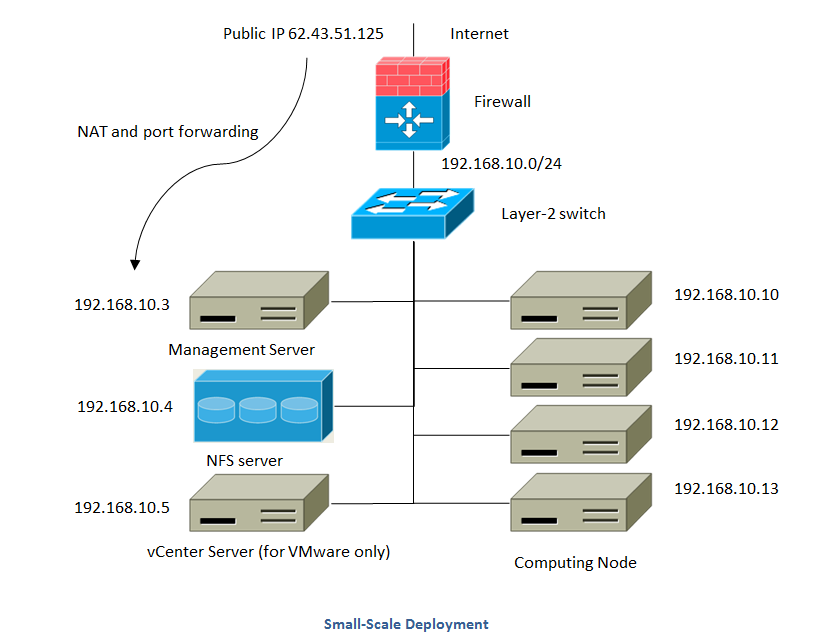
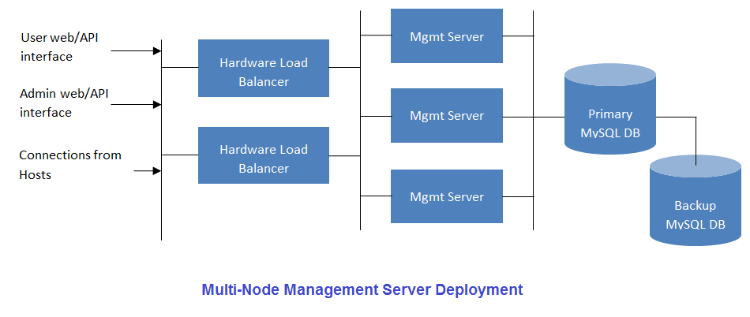
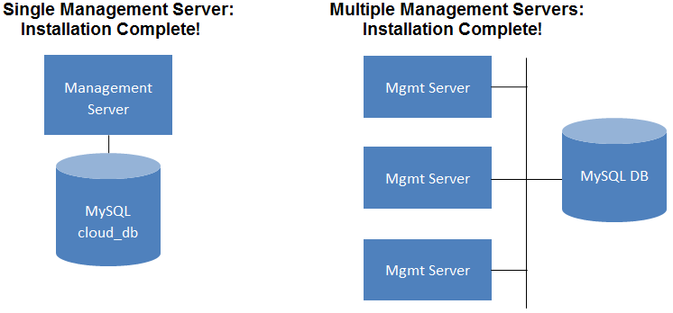
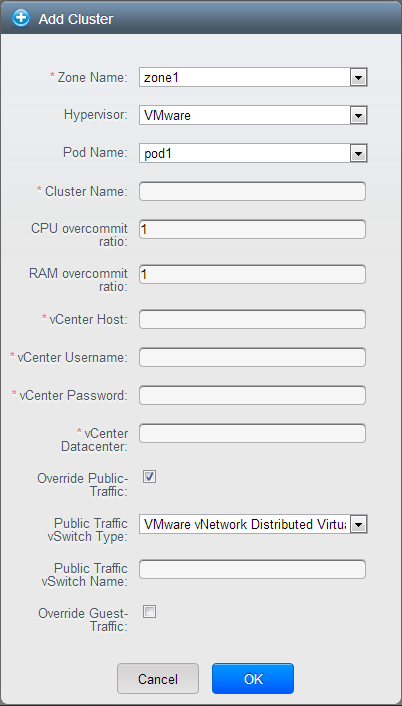
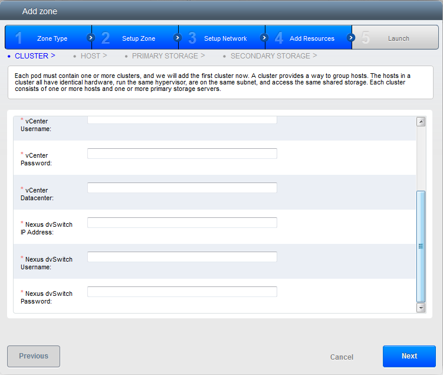
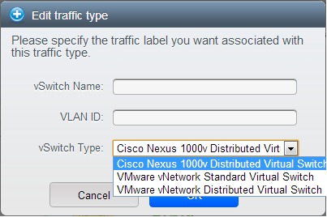
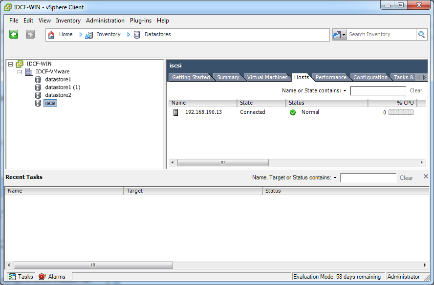
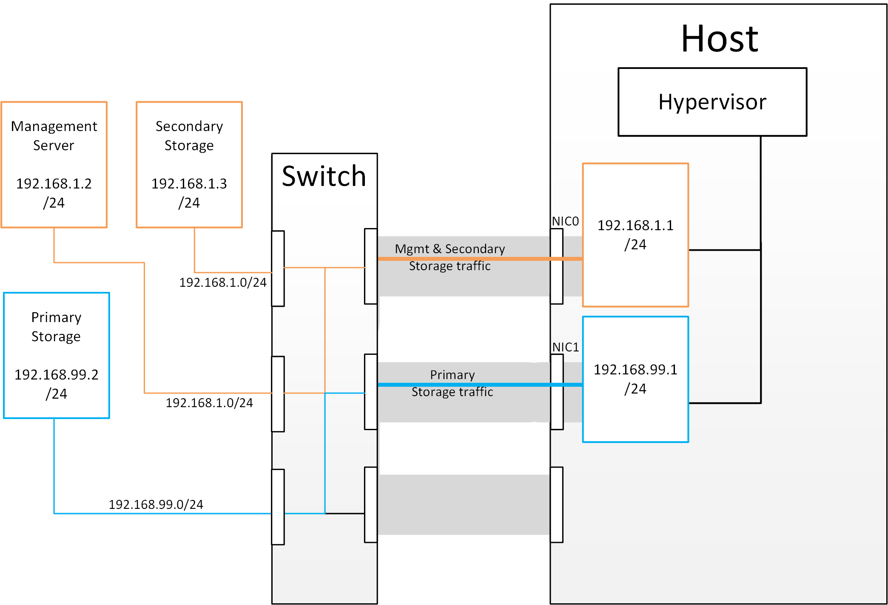
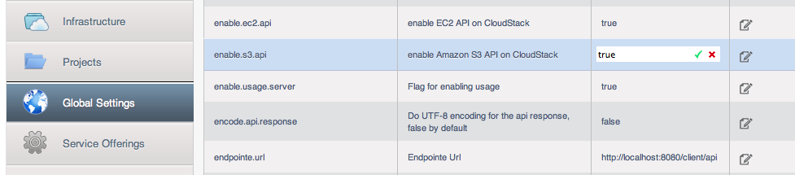
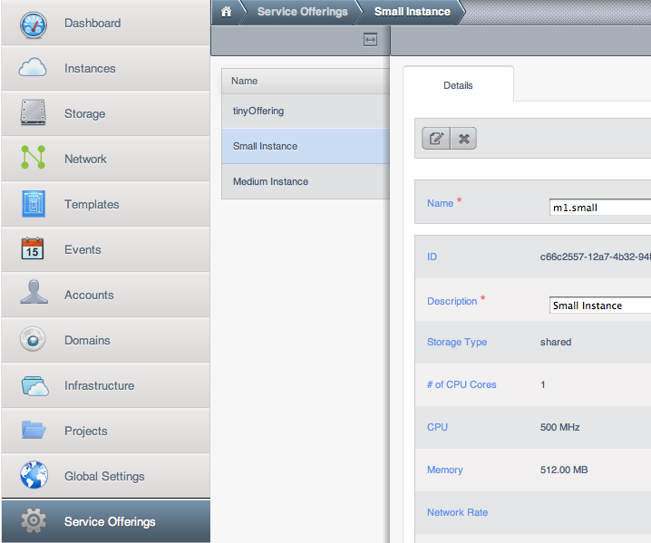

Primary Storage¶
Cluster设置完成 - 会有一个提示，提示添加primary storage。 选择NFS作为存储类型并且输入以下信息：
- Name - 设置为‘Primary1’
- Server - 设置为IP 172.16.10.2
- Path - 设置为/primary

本文为 Apache CloudStack 安装指南, 文档中心, 管理员指南或Release-Notes 参见:
注意
在本文档中，我们首先通过一些设计和架构 选择 来创建一个云。 然后我们会深入一个单节点快速开始 指南 来引导您理解安装过程。 源码安装 步骤 会在后续章节中给出，用于帮助开发者发布自己的版本。 除此以外，您可以使用社区维护的包存储库进行一般 安装。 文档的其它部分为 配置 数据中心和 网络, 存储 以及 计算节点。
架构选择取决于规模和功能。
本章包含架构以下部署实例：用于测试和实验的小规模架构和用于生产环境的完全冗余的大规模架构。

本图描述了一个小规模Cloudtack环境的网络架构。

本图描述了一个大规模Cloudtack环境的网络架构。
在前文描述的大规模冗余配置中，存储通信可能会导致管理网络超载。此时可以选择一个独立的存储网络。 存储协议例如iSCSI 对网络延时很敏感。一个独立的存储网络可以保证客户网络通信不影响存储性能。
CloudStack Management Server 部署为一个或多个前端服务连接同一个MySQL 数据库。 Optionally a pair of hardware load balancers distributes requests from the web. A backup management server set may be deployed using MySQL replication at a remote site to add DR capabilities.

管理员需要决定以下几项。
CloudStack 平台可以通过使用zone的方式很容易的扩展到多地区部署。下图展示了一个多地区部署的案例。
数据中心 1 部署了primary Management Server 和 zone 1. MySQL 数据库实时同步到位于Data Center 2的secondary Management Server。

该图表述了一个独立存储网络的部署。每个server有4个网卡，2个连接到pod的网络交换机上，另外两个连接到存储网络的交换机上。
有两种方式来配置存储网络：

该图描述了网卡bonding和多路I/O（MPIO）的区别。 网卡bonding 配置只涉及到一个网络。MPIO涉及到两个独立的网络。
CloudStack 支持多种主流的hypervisor. 您的云环境可以考虑单一hypervisor或者多种hypervisor。 每个cluster中的主机必须运行相同的hypervisor.
您可能以及有了一个安装好正在运行的hypervisor，在这种情况下，您的选择以及确定了。 如果您正在开始选型，您需要决定哪种hypervisor最适合您的需要。 本文档不对hypervisor进行详细比较。但是，了解Cloudstack对于每种hypervisor的支持会更有利于您的选型。 下表提供此类信息。
| Feature | XenServer | vSphere | KVM - RHEL | LXC | HyperV | Bare Metal |
|---|---|---|---|---|---|---|
| Network Throttling | Yes | Yes | No | No | ? | N/A |
| 基本网络模式的安全组 | Yes | No | Yes | Yes | ? | No |
| iSCSI | Yes | Yes | Yes | Yes | Yes | N/A |
| FibreChannel | Yes | Yes | Yes | Yes | Yes | N/A |
| Local Disk | Yes | Yes | Yes | Yes | Yes | Yes |
| HA | Yes | Yes (Native) | Yes | ? | Yes | N/A |
| Snapshots of local disk | Yes | Yes | Yes | ? | ? | N/A |
| Local disk as data disk | Yes | No | Yes | Yes | Yes | N/A |
| Work load balancing | No | DRS | No | No | ? | N/A |
| 手动触发 live migration | Yes | Yes | Yes | ? | Yes | N/A |
| 通过link local网络和v-Router通信来节约管理网络IP | Yes | No | Yes | Yes | ? | N/A |
下表展示了不同hypervisor的存储选项和属性。
| Primary Storage Type | XenServer | vSphere | KVM - RHEL | LXC | HyperV |
|---|---|---|---|---|---|
| 磁盘，模板和快照的格式 | VHD | VMDK | QCOW2 | VHD | |
| iSCSI support | CLVM | VMFS | Yes via Shared Mountpoint | Yes via Shared Mountpoint | No |
| Fiber Channel support | Yes, Via existing SR | VMFS | Yes via Shared Mountpoint | Yes via Shared Mountpoint | No |
| NFS support | Yes | Yes | Yes | Yes | No |
| Local storage support | Yes | Yes | Yes | Yes | Yes |
| Storage over-provisioning | NFS | NFS and iSCSI | NFS | No | |
| SMB/CIFS | No | No | No | No | Yes |
XenServer 在iSCSI和Fiber Channel卷上使用一种集群存储LVM 来存储VM 镜像并且不支持over-provision。 但是这个存储本身可以支持thin-provisioning。因此CloudStack可以通过使用thin-provisioned 存储卷来支持over-provision。
KVM 支持“Shared Mountpoint（共享挂载点）” 存储. 一个shared mountpoint是一个挂载到集群所有server上的文件存储路径。 这个路径在集群所有机器上必须是完全相同的，例如 /mnt/primary1. 该shared mountpoint是一个集群存储文集系统，例如OCFS2。 这种情况下，CloudStack不再像操作NFS 一样去挂载或者卸载存储。 CloudStack 需要管理员来保证存储可用。
使用NFS 存储, CloudStack 可以实现overprovisioning. 在这种情况下全局配置的属性storage.overprovisioning.factor 是用来控制超分配的倍数。这个和hypervisor的类型无关。
Local storage（本地存储）是主存储的一种，用于vSphere, XenServer, 和KVM。当启用本地存储的时候，会在所有主机上自动创建一个本地存储池。 如果要使用本地存储来存放系统虚拟机（例如Virtual Router）需要再全局设置里面设置system.vm.use.local.storage为true。
CloudStack支持一个集群中有多个主存储。例如，可以部署2个NFS 作为主存储。或者先部署一个iSCSI LUN，成功后在添加第二个。
部署一个云平台是一件很有挑战性的事情。需要做很多不同的技术选型，CloudStack可以灵活配置来适应不同的技术选型组合。 本章节内容包含云平台实施的一些建议和需求。
这些内容仅作为建议而非特定方案。 如果指南中没有合适的方案，我们建议您通过mailing list来寻求指导或者建议。
警告
没有升级至最新补丁包可能导致数据损坏或丢失虚拟机。
安装所有hypervisor官方提供的补丁包。订阅hypervisor提供商的支持页面来跟踪所发布的补丁，在发布之后尽快更新。 CloudStack本身不会订阅或管理hypervisor的补丁。 主机更新到最新补丁是很有必要的。Hypervisor的提供商一般不提供旧版本的支持。
Infrastructure-as-a-Service (IaaS：基础设施即服务) 云是一个很复杂工程， 因为设计上有特别多的选项，即便是有经验的系统管理员在刚接触云平台的时候，也可能会导致迷惑。 本手册的目标是提供一组指导，帮助您尽快上手CloudStack并绕过一些可能的问题。
该手册主题为创建一个CloudStack云，该云使用CentOS 6.5上部署的KVM 和三层网络隔离出来的NFS 存储(又名安全组), 并且将其都部署在统一台服务器上。
KVM（Kernel-based Virtual Machine）是一个基于Linux Kernel的虚拟化技术。 KVM 在硬件虚拟化扩展的基础上支持本地虚拟化。
安全组作为分布式防火墙来控制一组虚拟机的访问。
完成该手册内容你需要准备以下几项：
在Cloudtack安装开始之前，需要先准备安装好部署环境。接下来我们逐步进行准备。
使用CentOS 6.5 x86_64 minimal install ISO安装操作系统。默认安装即可。
安装完成后，使用root账户通过SSH 连接到新的系统。注意不能在生产环境中允许root登陆，在安装配置完成后需要关闭root的远程登陆。
默认网卡不会启动，您需要配置你的网络环境来启动网卡。 我们设计为本环境中没有DHCP服务器，所以我们要手动配置网络设置。 在此次配置中，eth0是唯一的可用的网卡。
使用root账户登陆Console. 查看文件 /etc/sysconfig/network-scripts/ifcfg-eth0, 如下所示，默认为:
DEVICE="eth0"
HWADDR="52:54:00:B9:A6:C0"
NM_CONTROLLED="yes"
ONBOOT="no"
该配置无法连接网络，也不适合CloudStack。我们来配置此文件来指定IP 地址，掩码等，如下所示：
提示
在配置中不要使用示例中的Hardware Address (也称为MAC address)。这是网卡特定属性，应该保持和物理网卡信息一致。
DEVICE=eth0
HWADDR=52:54:00:B9:A6:C0
NM_CONTROLLED=no
ONBOOT=yes
BOOTPROTO=none
IPADDR=172.16.10.2
NETMASK=255.255.255.0
GATEWAY=172.16.10.1
DNS1=8.8.8.8
DNS2=8.8.4.4
提示
IP Addressing - 本文档中，我们假设您只有一个24位掩码的网络。 可以是任何符合RFC 1918标准的网络。 但是我们假设您使用和我们一样的地址，从而我们使用172.16.10.2 但是您可能使用192.168.55.0/24网络并且IP 为192.168.55.2
现在配置文件已经完成，接下来运行以下命令启动网络：
# chkconfig network on
# service network start
CloudStack需要已经正确设置过的hostname。默认安装的系统中，hostname默认为 localhost.localdomain. 可以通过运行以下命令来查看：
# hostname --fqdn
返回值为：
localhost
修改hostname，可以按和文件中相同的格式来修改/etc/hosts文件，例如：
127.0.0.1 localhost localhost.localdomain localhost4 localhost4.localdomain4
::1 localhost localhost.localdomain localhost6 localhost6.localdomain6
172.16.10.2 srvr1.cloud.priv
修改好配置之后，重启网络：
# service network restart
再次执行 hostname –fqdn 来查看hostname，确认返回了一个FQDN结果。
安装部署CloudStack，需要设置SELinux为permissive模式。 我们需要设置修改当前环境和修改配置以便重启后依然生效。
当前环境中配置SELinux命令为：
# setenforce 0
修改永久生效的SElinux配置需要修改配置文件/etc/selinux/config，如下：
# This file controls the state of SELinux on the system.
# SELINUX= can take one of these three values:
# enforcing - SELinux security policy is enforced.
# permissive - SELinux prints warnings instead of enforcing.
# disabled - No SELinux policy is loaded.
SELINUX=permissive
# SELINUXTYPE= can take one of these two values:
# targeted - Targeted processes are protected,
# mls - Multi Level Security protection.
SELINUXTYPE=targeted
NTP 是为了保证环境中所有的server在时间上一致。但是，NTP默认没有安装。 所以我们需要手动安装并配置NTP服务。步骤如下：
# yum -y install ntp
默认配置已经可以满足我们的目标了，我们只需要启动并设置为自动启动即可，步骤如下：
# chkconfig ntpd on
# service ntpd start
我们需要配置机器使用一个CloudStack 安装源。
Note
Apache CloudStack官方发布的release是一个源码包，并没有官方的二进制包。 完整的安装指南包含如何获取源码并且打包生成RPM包，创建yum源。 本指南尽量保持简单，所以我们使用一个社区提供的yum源。
想要创建一个CloudStack yum源, 需要创建/etc/yum.repos.d/cloudstack.repo 输入以下内容：
[cloudstack]
name=cloudstack
baseurl=http://cloudstack.apt-get.eu/centos/6/4.8/
enabled=1
gpgcheck=0
本指南配置使用一个NFS同时作为主存储和二级存储。 我们先来设置两个NFS共享目录。 首先安装nfs-utils.
# yum -y install nfs-utils
接下来配置NFS来支持两个共享目录。 简单的配置/etc/exports 即可，输入以下内容：
/secondary *(rw,async,no_root_squash,no_subtree_check)
/primary *(rw,async,no_root_squash,no_subtree_check)
您可能注意到了，我们使用了两个并不存在的目录。现在我们通过以下命令创建这两个目录：
# mkdir /primary
# mkdir /secondary
CentOS 6.x 默认使用NFSv4。NFSv4需要在所有client端设置域名。本例中，域名为cloud.priv, 所以，请修改域名设置文件/etc/idmapd.conf，取消注释并如下设置： Domain = cloud.priv
取消 /etc/sysconfig/nfs以下行的注释
LOCKD_TCPPORT=32803
LOCKD_UDPPORT=32769
MOUNTD_PORT=892
RQUOTAD_PORT=875
STATD_PORT=662
STATD_OUTGOING_PORT=2020
配置防火墙来允许NFS连接。 编辑文件/etc/sysconfig/iptables
-A INPUT -s 172.16.10.0/24 -m state --state NEW -p udp --dport 111 -j ACCEPT
-A INPUT -s 172.16.10.0/24 -m state --state NEW -p tcp --dport 111 -j ACCEPT
-A INPUT -s 172.16.10.0/24 -m state --state NEW -p tcp --dport 2049 -j ACCEPT
-A INPUT -s 172.16.10.0/24 -m state --state NEW -p tcp --dport 32803 -j ACCEPT
-A INPUT -s 172.16.10.0/24 -m state --state NEW -p udp --dport 32769 -j ACCEPT
-A INPUT -s 172.16.10.0/24 -m state --state NEW -p tcp --dport 892 -j ACCEPT
-A INPUT -s 172.16.10.0/24 -m state --state NEW -p udp --dport 892 -j ACCEPT
-A INPUT -s 172.16.10.0/24 -m state --state NEW -p tcp --dport 875 -j ACCEPT
-A INPUT -s 172.16.10.0/24 -m state --state NEW -p udp --dport 875 -j ACCEPT
-A INPUT -s 172.16.10.0/24 -m state --state NEW -p tcp --dport 662 -j ACCEPT
-A INPUT -s 172.16.10.0/24 -m state --state NEW -p udp --dport 662 -j ACCEPT
重启防火墙：
# service iptables restart
设置NFS开机自启动：
# service rpcbind start
# service nfs start
# chkconfig rpcbind on
# chkconfig nfs on
下面我们开始安装CloudStack 管理服务和周边工具。
安装MySQL并修改部分配置以运行CloudStack。
安装命令：
# yum -y install mysql-server
安装完成后，我们需要修改/etc/my.cnf几项配置。我们需要在[mysqld]标签下插入以下几项：
innodb_rollback_on_timeout=1
innodb_lock_wait_timeout=600
max_connections=350
log-bin=mysql-bin
binlog-format = 'ROW'
MySQL配置完成，接下来执行以下命令启动MySQL并设置为开机自启动：
# service mysqld start
# chkconfig mysqld on
现在开始安装management server. 步骤如下：
# yum -y install cloudstack-management
安装完成后，执行以下命令配置数据库：
# cloudstack-setup-databases cloud:password@localhost --deploy-as=root
执行完成后，可以看到类似信息“CloudStack has successfully initialized the database.”
数据库创建完成后，执行最后一步来设置management server：
# cloudstack-setup-management
如果使用Tomcat7 需要增加 –tomcat7 参数。
CloudStack使用系统虚拟机来提供虚拟机console的访问，提供多种网络服务，管理多种存储。 启动CloudStack的时候，这一步骤将会获取虚拟机镜像。
现在我们需要将系统虚拟机模板下载下来并部署到刚刚挂载的共享目录中。 Management server及其脚本会操作这些系统虚拟机模板。
/usr/share/cloudstack-common/scripts/storage/secondary/cloud-install-sys-tmplt \
-m /secondary \
-u http://cloudstack.apt-get.eu/systemvm/4.6/systemvm64template-4.6.0-kvm.qcow2.bz2 \
-h kvm -F
至此，management server安装基本结束。CloudStack还需要其它配置，我们会在设置完hypervisor之后继续配置CloudStack。
我们选择KVM作为hypervisor - 我们会讲解如何初始化KVM 及如何初始化安装agent，您可以根据此步骤安装其它KVM节点。
我们用management server同时作为计算节点，这样，我们已经完成了一部分先决条件的设置，但是为了清晰，我们依然再次列出来。 步骤如下：
当然，您已经不需要再次执行在management server安装过程中已经完成的步骤，但是添加其它节点的时候，还是需要完成以上步骤。
Installation of the KVM agent is trivial with just a single command, but afterwards we’ll need to configure a few things.
# yum -y install cloudstack-agent
我们需要对KVM进行两方面的配置，libvirt, 和QEMU.
KVM单节点配置是相对比较简单的。我们需要修改QEMU VNC配置。 修改/etc/libvirt/qemu.conf文件，删掉下列行的注释并修改为以下内容。
vnc_listen=0.0.0.0
CloudStack通过libvirt来管理虚拟机。正确配置libvirt是很重要的。 Libvirt是cloud-agent的一个依赖，需要提前安装。
为了支持live migration，libvirt需要监听非安全的TCP连接。 我们需要禁止libvirt使用Multicast DNS 广播。这些配置选项都在/etc/libvirt/libvirtd.conf文件中。
设置以下选项：
listen_tls = 0
listen_tcp = 1
tcp_port = "16059"
auth_tcp = "none"
mdns_adv = 0
仅仅在libvirtd.conf中打开 “listen_tcp” 是不够的, 我们还需要修改/etc/sysconfig/libvirtd文件中的选项：
打开下列行的注释：
#LIBVIRTD_ARGS="--listen"
重启libvirt
# service libvirtd restart
# lsmod | grep kvm
kvm_intel 55496 0
kvm 337772 1 kvm_intel
现在KVM安装和配置已经完成，我们接下来开始使用CloudStack UI来部署我们的云平台。
As we noted before we will be using security groups to provide isolation and by default that implies that we’ll be using a flat layer-2 network. It also means that the simplicity of our setup means that we can use the quick installer.
登陆CloudStack的web管理界面，打开浏览器，登陆网址： http://172.16.10.2:8080/client默认用户名为‘admin’ 默认密码为：‘password’。您可以看到一个页面让您选择几种选项来设置您的CloudStack。 选择Continue with Basic Setup option.
您可以看到一个提示，要求您修改admin密码。可以按需执行。
Zone是CloudStack中最大的管理单元 - 我们通过当前页面来创建一个Zone。接下来，我们需要5个部分的信息。
Note
CloudStack 区分内部和外部DNS。内部DNS只用来解析内网主机名，例如NFS server的DNS名。 外部DNS用于给客户虚拟机提供对公网域名的解析。 您可以使用相同类型的DNS server，但是如果这样配置，则必须要保证内网和外网IP都可以路由到这个DNS server。 在我们当前配置中，并没有用到内网域名，为了不再设置一个内网DNA server，我们把内外网设为同一个。
Zone已经创建完成了，接下来我们注册一个pod，输入以下信息：
Zone已经创建完成，我们接下来只需要添加几个配置来创建cluster。
输入以下信息来添加cluster的第一台主机。
Cluster设置完成 - 会有一个提示，提示添加primary storage。 选择NFS作为存储类型并且输入以下信息：
在一个新的zone，需要指定二级存储信息 - 一般如下所示：
现在，点击Launch，云开始进行设置 - 这会持续几分钟时间，具体取决于您的网络速度。
您已经完成了Apache CloudStack 云平台的安装。
官方的CloudStack release通常是以源码的形式进行发布。 您可能更期望能获得更加方便的“二进制安装包” 但社区以源码包作为发布的规范。 本章中，我们将会介绍如何获取源码并且编译打包，以便于您可以使用maven或者创建Debian或者RPM包。
注意：从源码编译安装一个IaaS云平台并非最有效率的方式。但是，我们还是会介绍从源码编译打包RPM或Debian包的方法。
该指南是针对特定版本的。从源码编译4.7.x系列的方法和编译4.2.x系列并不相同。
如果您在使用一个没有公开发布的CloudStack版本，参见根目录下的INSTALL.md。
可以在Apache CloudStack 下载页获取最新发布版本。
历史发布可以在archive.apache.org找到。可以在下载页面找到更多信息。
在‘Latest release’ 部分可以找到以下几个链接. 一个以tar.bz2结尾，
和一个PGP/GPG 签名, MD5,以及 SHA512 file.
tar.bz2 文件是Bzip2打包的源码。.asc 文件是一个加密的签名文件，用来确认该发布版本的真实性。.md5 文件是一个MD5的哈希值，用来确认是否下载完成。.sha 文件是一个SHA512的哈希值，用来确认是否下载完成。有很多种机制用来校验下载的版本是否真实有效。
要使用GPG签名进行校验，需要下载 KEYS 文件。
接下来，执行以下命令导入这些key：
$ wget http://www.apache.org/dist/cloudstack/KEYS
$ gpg --import KEYS
CloudStack提供了一个独立的GPG签名，可执行以下命令校验这个签名：
$ gpg --verify apache-cloudstack-4.8.0-src.tar.bz2.asc
如果签名有效，您会看到如下输出： ‘Good signature’.
在加密的签名之外CloudStack还提供了一个MD5校验值，您可以通过此校验值校验下载是否正确。 命令如下：
$ gpg --print-md MD5 apache-cloudstack-4.8.0-src.tar.bz2 | diff - apache-cloudstack-4.8.0-src.tar.bz2.md5
如果成功则不会有返回值。 如果有任何输出，则说明本地生成的哈希值和社区发布不一致。
MD5之外，CloudStack还提供了一个SHA512加密的哈希值，用来确保下载有效。可以使用如下命令进行判断：
$ gpg --print-md SHA512 apache-cloudstack-4.8.0-src.tar.bz2 | diff - apache-cloudstack-4.8.0-src.tar.bz2.sha
如果成功则不会有返回值。 如果有任何输出，则说明本地生成的哈希值和社区发布不一致。
编译CloudStack需要很多的预设值。本文档假定编译是在使用RPM或DEB安装包的Linux系统上进行的，并且打包为RPM或在DEB。
你需要以下组件来进行编译：
执行以下命令解压源码：
$ tar -jxvf apache-cloudstack-4.8.0-src.tar.bz2
切换到源码目录中：
$ cd ./apache-cloudstack-4.8.0-src
在上文的依赖之外，还需要安装其它的依赖。我们推荐使用Maven 3。
$ sudo apt-get update
$ sudo apt-get install python-software-properties
$ sudo apt-get update
$ sudo apt-get install ant debhelper openjdk-7-jdk tomcat6 libws-commons-util-java genisoimage python-mysqldb libcommons-codec-java libcommons-httpclient-java liblog4j1.2-java maven
按照前文预设，我们已经安装好了基本的编译环境，接下来我们编译过程中会有很多依赖jar。 CloudStack用maven作为依赖管理。 可以执行以下命令来处理编译期依赖：
$ mvn -P deps
解决完编译依赖之后，我们可以开始执行命令编译CloudStack并打包成DEB，命令如下：
$ dpkg-buildpackage -uc -us
该命令会打包成如下DEB安装包：
cloudstack-common-4.8.0.amd64.deb
cloudstack-management-4.8.0.amd64.deb
cloudstack-agent-4.8.0.amd64.deb
cloudstack-usage-4.8.0.amd64.deb
cloudstack-awsapi-4.8.0.amd64.deb
cloudstack-cli-4.8.0.amd64.deb
cloudstack-docs-4.8.0.amd64.deb
创建安装包完成后，您可能想要把这些包复制到一个能提供HTTP服务的系统中。
首先您需要创建一个目录，然后执行dpkg-scanpackages命令来创建
Packages.gz, 该包中包含所有包的结构。
最后，您可以将这个源添加到您的系统中，以便使用APT方式来安装这些包。
首先确认您已经安装了dpkg-dev。
This should have been installed when you pulled in the
debhelper application previously, but if you’re generating
Packages.gz on a different system, be sure that it’s installed there
as well.
$ sudo apt-get install dpkg-dev
接下来，将DEB复制到能提供HTTP的目录中。本例中，我们使用/var/www/cloudstack/repo
，您可以按需修改。
$ sudo mkdir -p /var/www/cloudstack/repo/binary
$ sudo cp *.deb /var/www/cloudstack/repo/binary
$ cd /var/www/cloudstack/repo/binary
$ sudo sh -c 'dpkg-scanpackages . /dev/null | tee Packages | gzip -9 > Packages.gz'
注意
如果提示缺失文件，可忽略。
现在所有的DEB包已经编译完成并且Packages.gz已经生成至
binary 目录，可以使用HTTP访问。（进行下一步之前，您可以使用
wget 或 curl 来测试。）
现在我们已经有了一个APT源，您需要进行相应配置来启用这个源。您可以在 /etc/apt/sources.list.d
文件中加入相关内容。也可以创建一个新的文件/etc/apt/sources.list.d/cloudstack.list
写入该内容：
deb http://server.url/cloudstack/repo/binary ./
现在APT源已经配置完成，运行update命令使APT获得CloudStack安装包的路径。
$ sudo apt-get update
现在可以跳转至Install on Ubuntu.
如前文“Prerequisites for building Apache CloudStack”所示， 在编译之前，需要先做一些环境预设。 我们假定您的编译环境是64位CentOS 或者Red Hat Enterprise Linux.
# yum groupinstall "Development Tools"
# yum install java-1.7.0-openjdk-devel.x86_64 genisoimage mysql mysql-server ws-commons-util MySQL-python tomcat6 createrepo
接下来，需要安装运行时的maven依赖。我们使用的是maven3来管理依赖，所以您需要下载Maven 3.0.5 (Binary tar.gz) 并解压到您的根目录（或其它您习惯的目录）：
$ cd ~
$ tar zxvf apache-maven-3.0.5-bin.tar.gz
$ export PATH=~/apache-maven-3.0.5/bin:$PATH
Maven也需要配置Java环境变量（JAVA_HOME）
$ export JAVA_HOME=/usr/lib/jvm/java-1.7.0-openjdk.x86_64
验证Maven是否安装成功：
$ mvn --version
如果您需要保证环境变量重启后依然有效，需要更新~/.bashrc 写入PATH 和
JAVA_HOME。
编译RPB很简单。源码已经下载完成并解压到本地目录后，您只需要几分钟即可编译完成。
注意
打包方式和之前有变化。如果您曾编译过其它的CloudStack版本，您需要知道 在使用Apache Maven之后，打包方式有了很大变化。请务必跟随本章节步骤进行打包。
环境预设和源码下载已经完成，切换到 packaging/ 目录。
$ cd packaging/
通过package.sh 脚本来创建CloudStack包：
$ ./package.sh -d centos6
该脚本会运行一段时间，然后将打包完成的安装包放到
dist/rpmbuild/RPMS/x86_64/。
您可以在该目录中看到以下RPM：
cloudstack-agent-4.8.0.el6.x86_64.rpm
cloudstack-awsapi-4.8.0.el6.x86_64.rpm
cloudstack-cli-4.8.0.el6.x86_64.rpm
cloudstack-common-4.8.0.el6.x86_64.rpm
cloudstack-docs-4.8.0.el6.x86_64.rpm
cloudstack-management-4.8.0.el6.x86_64.rpm
cloudstack-usage-4.8.0.el6.x86_64.rpm
RPM打包完成后 - 创建Yum网络源就很简单了。按以下步骤创建一个Yum 源：
$ mkdir -p ~/tmp/repo
$ cd ../..
$ cp dist/rpmbuild/RPMS/x86_64/*rpm ~/tmp/repo/
$ createrepo ~/tmp/repo
在 ~/tmp/repo中的目录和文件
现在可以上传到一个web server或在yum 源server。
现在yum源已经有了RPM和元数据信息，我们需要配置机器使用此yum源来安装CloudStack。
添加文件/etc/yum.repos.d/cloudstack.repo
写入以下信息：
[apache-cloudstack]
name=Apache CloudStack
baseurl=http://webserver.tld/path/to/repo
enabled=1
gpgcheck=0
完成之后，您可以通过yum来网络安装CloudStack了。
如果您的系统需要支持VMware, NetApp, F5, NetScaler, SRX, 或者其它非开源组件（non-Open Source Software【nonoss】）， 您需要下载一些其它组件，执行以下步骤（与之前略有不同）。
警告
CloudStack因License限制，有些可支持的插件不能作为开源产品发布。 其中，一些依赖包需要单独的所有权，两位一些可能需要不符合 Apache license标准的第三方包。
编译Non-OSS插件，需要先将依赖的JAR包放到deps 目录下。
因为这些模块不能随着CloudStack一起发布，所以需要单独下载。链接参见WIKI页面 *How to build CloudStack*
同样，您需要下载
vhd-util,
该文件因license问题，已经从代码结构中移除。您需要手动将vhd-util移动到
scripts/vm/hypervisor/xenserver/ 目录下。
完成以上步骤后，您可以执行以下命令打包CloudStack的
noredist版本：
$ mvn clean
$ mvn install -Dnoredist
noredist profile, you can
package it using the “Building RPMs from Source”
or “Building DEB packages” instructions.已经完成设计阶段并且规划了一个比较复杂的实施环境，或者准备好要升级一个落后版本的人。 按照以下步骤，您可以使用CloudStack更为强大的功能，例如高级VLAN网络，HA，附加网络组件例如负载均衡和防火墙， 以及支持多种hypervisor，包括 Citrix XenServer, KVM, and VMware vSphere。
For anything more than a simple trial installation, you will need guidance for a variety of configuration choices. It is strongly recommended that you read the following:
The machines that will run the Management Server and MySQL database must meet the following requirements. The same machines can also be used to provide primary and secondary storage, such as via localdisk or NFS. The Management Server may be placed on a virtual machine.
The host is where the cloud services run in the form of guest virtual machines. Each host is one machine that meets the following requirements:
Hosts have additional requirements depending on the hypervisor. See the requirements listed at the top of the Installation section for your chosen hypervisor:
Warning
Be sure you fulfill the additional hypervisor requirements and installation steps provided in this Guide. Hypervisor hosts must be properly prepared to work with CloudStack. For example, the requirements for XenServer are listed under Citrix XenServer Installation.
CloudStack is only distributed from source from the official mirrors. However, members of the CloudStack community may build convenience binaries so that users can install Apache CloudStack without needing to build from source.
If you didn’t follow the steps to build your own packages from source in the sections for “Building RPMs from Source” or “Building DEB packages” you may find pre-built DEB and RPM packages for your convenience linked from the downloads page.
Note
These repositories contain both the Management Server and KVM Hypervisor packages.
This section describes installing the Management Server. There are two slightly different installation flows, depending on how many Management Server nodes will be in your cloud:
In either case, each machine must meet the system requirements described in Minimum System Requirements.
Warning
For the sake of security, be sure the public Internet can not access port 8096 or port 8250 on the Management Server.
The procedure for installing the Management Server is:
The OS must be prepared to host the Management Server using the following steps. These steps must be performed on each Management Server node.
Log in to your OS as root.
Check for a fully qualified hostname.
hostname --fqdn
This should return a fully qualified hostname such as “management1.lab.example.org”. If it does not, edit /etc/hosts so that it does.
Make sure that the machine can reach the Internet.
ping www.cloudstack.org
Turn on NTP for time synchronization.
Note
NTP is required to synchronize the clocks of the servers in your cloud.
Install NTP.
yum install ntp
sudo apt-get install openntpd
Repeat all of these steps on every host where the Management Server will be installed.
The first step in installation, whether you are installing the Management Server on one host or many, is to install the software on a single node.
Note
If you are planning to install the Management Server on multiple nodes for high availability, do not proceed to the additional nodes yet. That step will come later.
The CloudStack Management server can be installed using either RPM or DEB packages. These packages will depend on everything you need to run the Management server.
CloudStack is only distributed from source from the official mirrors. However, members of the CloudStack community may build convenience binaries so that users can install Apache CloudStack without needing to build from source.
If you didn’t follow the steps to build your own packages from source in the sections for “Building RPMs from Source” or “Building DEB packages” you may find pre-built DEB and RPM packages for your convenience linked from the downloads page.
Note
These repositories contain both the Management Server and KVM Hypervisor packages.
There is a RPM package repository for CloudStack so you can easily install on RHEL based platforms.
If you’re using an RPM-based system, you’ll want to add the Yum repository so that you can install CloudStack with Yum.
Yum repository information is found under /etc/yum.repos.d. You’ll
see several .repo files in this directory, each one denoting a
specific repository.
To add the CloudStack repository, create
/etc/yum.repos.d/cloudstack.repo and insert the following
information.
[cloudstack]
name=cloudstack
baseurl=http://cloudstack.apt-get.eu/centos/6/4.8/
enabled=1
gpgcheck=0
Now you should be able to install CloudStack using Yum.
You can add a DEB package repository to your apt sources with the following commands. Please note that only packages for Ubuntu 12.04 LTS (precise) and Ubuntu 14.04 (trusty) are being built at this time.
Use your preferred editor and open (or create)
/etc/apt/sources.list.d/cloudstack.list. Add the community provided
repository to the file:
deb http://cloudstack.apt-get.eu/ubuntu precise 4.8
We now have to add the public key to the trusted keys.
sudo wget -O - http://cloudstack.apt-get.eu/release.asc|apt-key add -
Now update your local apt cache.
sudo apt-get update
Your DEB package repository should now be configured and ready for use.
yum install cloudstack-management
sudo apt-get install cloudstack-management
This procedure is required only for installations where XenServer is installed on the hypervisor hosts.
Before setting up the Management Server, download
vhd-util from
http://download.cloud.com.s3.amazonaws.com/tools/vhd-util.
and copy it into /usr/share/cloudstack-common/scripts/vm/hypervisor/xenserver
of the Management Server.
The CloudStack management server uses a MySQL database server to store its data. When you are installing the management server on a single node, you can install the MySQL server locally. For an installation that has multiple management server nodes, we assume the MySQL database also runs on a separate node.
CloudStack has been tested with MySQL 5.1 and 5.5. These versions are included in RHEL/CentOS and Ubuntu.
This section describes how to install MySQL on the same machine with the Management Server. This technique is intended for a simple deployment that has a single Management Server node. If you have a multi-node Management Server deployment, you will typically use a separate node for MySQL. See Install the Database on a Separate Node.
Install MySQL from the package repository of your distribution:
yum install mysql-server
sudo apt-get install mysql-server
Open the MySQL configuration file. The configuration file is
/etc/my.cnf or /etc/mysql/my.cnf, depending on your OS.
Insert the following lines in the [mysqld] section.
You can put these lines below the datadir line. The max_connections parameter should be set to 350 multiplied by the number of Management Servers you are deploying. This example assumes one Management Server.
innodb_rollback_on_timeout=1
innodb_lock_wait_timeout=600
max_connections=350
log-bin=mysql-bin
binlog-format = 'ROW'
Note
You can also create a file /etc/mysql/conf.d/cloudstack.cnf
and add these directives there. Don’t forget to add [mysqld] on the
first line of the file.
Start or restart MySQL to put the new configuration into effect.
On RHEL/CentOS, MySQL doesn’t automatically start after installation. Start it manually.
service mysqld start
On Ubuntu, restart MySQL.
sudo service mysql restart
(CentOS and RHEL only; not required on Ubuntu)
Warning
On RHEL and CentOS, MySQL does not set a root password by default. It is very strongly recommended that you set a root password as a security precaution.
Run the following command to secure your installation. You can answer “Y” to all questions.
mysql_secure_installation
CloudStack can be blocked by security mechanisms, such as SELinux. Disable SELinux to ensure + that the Agent has all the required permissions.
Configure SELinux (RHEL and CentOS):
Check whether SELinux is installed on your machine. If not, you can skip this section.
In RHEL or CentOS, SELinux is installed and enabled by default. You can verify this with:
rpm -qa | grep selinux
Set the SELINUX variable in /etc/selinux/config to
“permissive”. This ensures that the permissive setting will be
maintained after a system reboot.
In RHEL or CentOS:
vi /etc/selinux/config
Change the following line
SELINUX=enforcing
to this:
SELINUX=permissive
Set SELinux to permissive starting immediately, without requiring a system reboot.
setenforce permissive
Set up the database. The following command creates the “cloud” user on the database.
cloudstack-setup-databases cloud:<dbpassword>@localhost \
--deploy-as=root:<password> \
-e <encryption_type> \
-m <management_server_key> \
-k <database_key> \
-i <management_server_ip>
When this script is finished, you should see a message like “Successfully initialized the database.”
Note
If the script is unable to connect to the MySQL database, check the
“localhost” loopback address in /etc/hosts. It should be pointing to
the IPv4 loopback address “127.0.0.1” and not the IPv6 loopback address
::1. Alternatively, reconfigure MySQL to bind to the IPv6 loopback
interface.
If you are running the KVM hypervisor on the same machine with the Management Server, edit /etc/sudoers and add the following line:
Defaults:cloud !requiretty
Now that the database is set up, you can finish configuring the OS for the Management Server. This command will set up iptables, sudoers, and start the Management Server.
cloudstack-setup-management
You should get the output message “CloudStack Management Server setup is done.” If the servlet container is Tomcat7 the argument –tomcat7 must be used.
This section describes how to install MySQL on a standalone machine, separate from the Management Server. This technique is intended for a deployment that includes several Management Server nodes. If you have a single-node Management Server deployment, you will typically use the same node for MySQL. See “Install the Database on the Management Server Node”.
Note
The management server doesn’t require a specific distribution for the MySQL node. You can use a distribution or Operating System of your choice. Using the same distribution as the management server is recommended, but not required. See “Management Server, Database, and Storage System Requirements”.
Install MySQL from the package repository from your distribution:
yum install mysql-server
sudo apt-get install mysql-server
Edit the MySQL configuration (/etc/my.cnf or /etc/mysql/my.cnf, depending on your OS) and insert the following lines in the [mysqld] section. You can put these lines below the datadir line. The max_connections parameter should be set to 350 multiplied by the number of Management Servers you are deploying. This example assumes two Management Servers.
Note
On Ubuntu, you can also create /etc/mysql/conf.d/cloudstack.cnf file and add these directives there. Don’t forget to add [mysqld] on the first line of the file.
innodb_rollback_on_timeout=1
innodb_lock_wait_timeout=600
max_connections=700
log-bin=mysql-bin
binlog-format = 'ROW'
bind-address = 0.0.0.0
Start or restart MySQL to put the new configuration into effect.
On RHEL/CentOS, MySQL doesn’t automatically start after installation. Start it manually.
service mysqld start
On Ubuntu, restart MySQL.
sudo service mysql restart
(CentOS and RHEL only; not required on Ubuntu)
Warning
On RHEL and CentOS, MySQL does not set a root password by default. It is very strongly recommended that you set a root password as a security precaution. Run the following command to secure your installation. You can answer “Y” to all questions except “Disallow root login remotely?”. Remote root login is required to set up the databases.
mysql_secure_installation
If a firewall is present on the system, open TCP port 3306 so external MySQL connections can be established.
On Ubuntu, UFW is the default firewall. Open the port with this command:
ufw allow mysql
On RHEL/CentOS:
Edit the /etc/sysconfig/iptables file and add the following line at the beginning of the INPUT chain.
-A INPUT -p tcp --dport 3306 -j ACCEPT
Now reload the iptables rules.
service iptables restart
Return to the root shell on your first Management Server.
Set up the database. The following command creates the cloud user on the database.
cloudstack-setup-databases cloud:<dbpassword>@<ip address mysql server> \
--deploy-as=root:<password> \
-e <encryption_type> \
-m <management_server_key> \
-k <database_key> \
-i <management_server_ip>
When this script is finished, you should see a message like “Successfully initialized the database.”
Now that the database is set up, you can finish configuring the OS for the Management Server. This command will set up iptables, sudoers, and start the Management Server.
cloudstack-setup-management
You should get the output message “CloudStack Management Server setup is done.”
For your second and subsequent Management Servers, you will install the Management Server software, connect it to the database, and set up the OS for the Management Server.
Perform the steps in “Prepare the Operating System” and “Building RPMs from Source” or “Building DEB packages” as appropriate.
This step is required only for installations where XenServer is installed on the hypervisor hosts.
Download vhd-util from vhd-util
Copy vhd-util to
/usr/share/cloudstack-common/scripts/vm/hypervisor/xenserver.
Ensure that necessary services are started and set to start on boot.
service rpcbind start
service nfs start
chkconfig nfs on
chkconfig rpcbind on
Configure the database client. Note the absence of the –deploy-as argument in this case. (For more details about the arguments to this command, see Install the Database on a Separate Node.)
cloudstack-setup-databases cloud:dbpassword@dbhost \
-e encryption_type \
-m management_server_key \
-k database_key \
-i management_server_ip
Configure the OS and start the Management Server:
cloudstack-setup-management
The Management Server on this node should now be running. If the servlet container is Tomcat7 the argument –tomcat7 must be used.
Repeat these steps on each additional Management Server.
Be sure to configure a load balancer for the Management Servers. See “Management Server Load Balancing”.
Secondary storage must be seeded with a template that is used for CloudStack system VMs.
Note
When copying and pasting a command, be sure the command has pasted as a single line before executing. Some document viewers may introduce unwanted line breaks in copied text.
On the Management Server, run one or more of the following
cloud-install-sys-tmplt commands to retrieve and decompress the
system VM template. Run the command for each hypervisor type that you
expect end users to run in this Zone.
If your secondary storage mount point is not named /mnt/secondary,
substitute your own mount point name.
If you set the CloudStack database encryption type to “web” when you
set up the database, you must now add the parameter -s
<management-server-secret-key>. See About Password and Key Encryption.
This process will require approximately 5 GB of free space on the local file system and up to 30 minutes each time it runs.
For Hyper-V
/usr/share/cloudstack-common/scripts/storage/secondary/cloud-install-sys-tmplt \
-m /mnt/secondary \
-u http://cloudstack.apt-get.eu/systemvm/4.6/systemvm64template-4.6.0-hyperv.vhd.zip \
-h hyperv \
-s <optional-management-server-secret-key> \
-F
For XenServer:
/usr/share/cloudstack-common/scripts/storage/secondary/cloud-install-sys-tmplt \
-m /mnt/secondary \
-u http://cloudstack.apt-get.eu/systemvm/4.6/systemvm64template-4.6.0-xen.vhd.bz2 \
-h xenserver \
-s <optional-management-server-secret-key> \
-F
For vSphere:
/usr/share/cloudstack-common/scripts/storage/secondary/cloud-install-sys-tmplt \
-m /mnt/secondary \
-u http://cloudstack.apt-get.eu/systemvm/4.6/systemvm64template-4.6.0-vmware.ova \
-h vmware \
-s <optional-management-server-secret-key> \
-F
For KVM:
/usr/share/cloudstack-common/scripts/storage/secondary/cloud-install-sys-tmplt \
-m /mnt/secondary \
-u http://cloudstack.apt-get.eu/systemvm/4.6/systemvm64template-4.6.0-kvm.qcow2.bz2 \
-h kvm \
-s <optional-management-server-secret-key> \
-F
For LXC:
/usr/share/cloudstack-common/scripts/storage/secondary/cloud-install-sys-tmplt \
-m /mnt/secondary \
-u http://cloudstack.apt-get.eu/systemvm/4.6/systemvm64template-4.6.0-kvm.qcow2.bz2 \
-h lxc \
-s <optional-management-server-secret-key> \
-F
For OVM3:
/usr/share/cloudstack-common/scripts/storage/secondary/cloud-install-sys-tmplt \
-m /mnt/secondary \
-u http://cloudstack.apt-get.eu/systemvm/4.6/systemvm64template-4.6.0-ovm.raw.bz2 \
-h ovm3 \
-s <optional-management-server-secret-key> \
-F
If you are using a separate NFS server, perform this step. If you are using the Management Server as the NFS server, you MUST NOT perform this step.
When the script has finished, unmount secondary storage and remove the created directory.
umount /mnt/secondary
rmdir /mnt/secondary
Repeat these steps for each secondary storage server.
Congratulations! You have now installed CloudStack Management Server and the database it uses to persist system data.

What should you do next?
This section tells how to add regions, zones, pods, clusters, hosts, storage, and networks to your cloud. If you are unfamiliar with these entities, please begin by looking through *Cloud Infrastructure Concepts*.
After the Management Server is installed and running, you can add the compute resources for it to manage. For an overview of how a CloudStack cloud infrastructure is organized, see “Cloud Infrastructure Overview”.
To provision the cloud infrastructure, or to scale it up at any time, follow these procedures:
When you have finished these steps, you will have a deployment with the following basic structure:

Grouping your cloud resources into geographic regions is an optional step when provisioning the cloud. For an overview of regions, see “About Regions”.
If you do not take action to define regions, then all the zones in your cloud will be automatically grouped into a single default region. This region is assigned the region ID of 1. You can change the name or URL of the default region by displaying the region in the CloudStack UI and clicking the Edit button.
Use these steps to add a second region in addition to the default region.
Each region has its own CloudStack instance. Therefore, the first
step of creating a new region is to install the Management Server
software, on one or more nodes, in the geographic area where you want
to set up the new region. Use the steps in the Installation guide.
When you come to the step where you set up the database, use the
additional command-line flag -r <region_id> to set a region ID
for the new region. The default region is automatically assigned a
region ID of 1, so your first additional region might be region 2.
# cloudstack-setup-databases cloud:<dbpassword>@localhost --deploy-as=root:<password> -e <encryption_type> -m <management_server_key> -k <database_key> -r <region_id>
By the end of the installation procedure, the Management Server should have been started. Be sure that the Management Server installation was successful and complete.
Now add the new region to region 1 in CloudStack.
Now perform the same procedure in reverse. Log in to region 2, and add region 1.
Copy the account, user, and domain tables from the region 1 database to the region 2 database.
In the following commands, it is assumed that you have set the root password on the database, which is a CloudStack recommended best practice. Substitute your own MySQL root password.
First, run this command to copy the contents of the database:
# mysqldump -u root -p<mysql_password> -h <region1_db_host> cloud account user domain > region1.sql
Then run this command to put the data onto the region 2 database:
# mysql -u root -p<mysql_password> -h <region2_db_host> cloud < region1.sql
Remove project accounts. Run these commands on the region 2 database:
# mysql> delete from account where type = 5;
Set the default zone as null:
# mysql> update account set default_zone_id = null;
Restart the Management Servers in region 2.
To add the third region, and subsequent additional regions, the steps are similar to those for adding the second region. However, you must repeat certain steps additional times for each additional region:
Install CloudStack in each additional region. Set the region ID for each region during the database setup step.
cloudstack-setup-databases cloud:<dbpassword>@localhost --deploy-as=root:<password> -e <encryption_type> -m <management_server_key> -k <database_key> -r <region_id>
Once the Management Server is running, add your new region to all existing regions by repeatedly using the Add Region button in the UI. For example, if you were adding region 3:
Repeat the procedure in reverse to add all existing regions to the new region. For example, for the third region, add the other two existing regions:
Copy the account, user, and domain tables from any existing region’s database to the new region’s database.
In the following commands, it is assumed that you have set the root password on the database, which is a CloudStack recommended best practice. Substitute your own MySQL root password.
First, run this command to copy the contents of the database:
# mysqldump -u root -p<mysql_password> -h <region1_db_host> cloud account user domain > region1.sql
Then run this command to put the data onto the new region’s database. For example, for region 3:
# mysql -u root -p<mysql_password> -h <region3_db_host> cloud < region1.sql
Remove project accounts. Run these commands on the region 3 database:
mysql> delete from account where type = 5;
Set the default zone as null:
mysql> update account set default_zone_id = null;
Restart the Management Servers in the new region.
Log in to each of the other regions, navigate to the one you want to delete, and click Remove Region. For example, to remove the third region in a 3-region cloud:
When you add a new zone, you will be prompted to configure the zone’s physical network and add the first pod, cluster, host, primary storage, and secondary storage.
After you select Basic in the Add Zone wizard and click Next, you will be asked to enter the following details. Then click Next.
Name. A name for the zone.
DNS 1 and 2. These are DNS servers for use by guest VMs in the zone. These DNS servers will be accessed via the public network you will add later. The public IP addresses for the zone must have a route to the DNS server named here.
Internal DNS 1 and Internal DNS 2. These are DNS servers for use by system VMs in the zone (these are VMs used by CloudStack itself, such as virtual routers, console proxies, and Secondary Storage VMs.) These DNS servers will be accessed via the management traffic network interface of the System VMs. The private IP address you provide for the pods must have a route to the internal DNS server named here.
Hypervisor. (Introduced in version 3.0.1) Choose the hypervisor for the first cluster in the zone. You can add clusters with different hypervisors later, after you finish adding the zone.
Network Offering. Your choice here determines what network services will be available on the network for guest VMs.
| Network Offering | Description |
|---|---|
| DefaultSharedNetworkOfferingWithSGService | If you want to enable security groups for guest traffic isolation, choose this. (See Using Security Groups to Control Traffic to VMs.) |
| DefaultSharedNetworkOffering | If you do not need security groups, choose this. |
| DefaultSharedNetscalerEIPandELBNetworkOffering | If you have installed a Citrix NetScaler appliance as part of your zone network, and you will be using its Elastic IP and Elastic Load Balancing features, choose this. With the EIP and ELB features, a basic zone with security groups enabled can offer 1:1 static NAT and load balancing. |
Network Domain. (Optional) If you want to assign a special domain name to the guest VM network, specify the DNS suffix.
Public. A public zone is available to all users. A zone that is not public will be assigned to a particular domain. Only users in that domain will be allowed to create guest VMs in this zone.
Choose which traffic types will be carried by the physical network.
The traffic types are management, public, guest, and storage traffic. For more information about the types, roll over the icons to display their tool tips, or see Basic Zone Network Traffic Types. This screen starts out with some traffic types already assigned. To add more, drag and drop traffic types onto the network. You can also change the network name if desired.
Assign a network traffic label to each traffic type on the physical network. These labels must match the labels you have already defined on the hypervisor host. To assign each label, click the Edit button under the traffic type icon. A popup dialog appears where you can type the label, then click OK.
These traffic labels will be defined only for the hypervisor selected for the first cluster. For all other hypervisors, the labels can be configured after the zone is created.
Click Next.
(NetScaler only) If you chose the network offering for NetScaler, you have an additional screen to fill out. Provide the requested details to set up the NetScaler, then click Next.
(NetScaler only) Configure the IP range for public traffic. The IPs in this range will be used for the static NAT capability which you enabled by selecting the network offering for NetScaler with EIP and ELB. Enter the following details, then click Add. If desired, you can repeat this step to add more IP ranges. When done, click Next.
In a new zone, CloudStack adds the first pod for you. You can always add more pods later. For an overview of what a pod is, see “About Pods”.
To configure the first pod, enter the following, then click Next:
Configure the network for guest traffic. Provide the following, then click Next:
In a new pod, CloudStack adds the first cluster for you. You can always add more clusters later. For an overview of what a cluster is, see About Clusters.
To configure the first cluster, enter the following, then click Next:
In a new cluster, CloudStack adds the first host for you. You can always add more hosts later. For an overview of what a host is, see About Hosts.
Note
When you add a hypervisor host to CloudStack, the host must not have any VMs already running.
Before you can configure the host, you need to install the hypervisor software on the host. You will need to know which version of the hypervisor software version is supported by CloudStack and what additional configuration is required to ensure the host will work with CloudStack. To find these installation details, see:
To configure the first host, enter the following, then click Next:
In a new cluster, CloudStack adds the first primary storage server for you. You can always add more servers later. For an overview of what primary storage is, see About Primary Storage.
To configure the first primary storage server, enter the following, then click Next:
After you select Advanced in the Add Zone wizard and click Next, you will be asked to enter the following details. Then click Next.
Choose which traffic types will be carried by the physical network.
The traffic types are management, public, guest, and storage traffic. For more information about the types, roll over the icons to display their tool tips, or see “Advanced Zone Network Traffic Types”. This screenstarts out with one network already configured. If you have multiple physical networks, you need to add more. Drag and drop traffic types onto a greyed-out network and it will become active. You can move the traffic icons from one network to another; for example, if the default traffic types shown for Network 1 do not match your actual setup, you can move them down. You can also change the network names if desired.
(Introduced in version 3.0.1) Assign a network traffic label to each traffic type on each physical network. These labels must match the labels you have already defined on the hypervisor host. To assign each label, click the Edit button under the traffic type icon within each physical network. A popup dialog appears where you can type the label, then click OK.
These traffic labels will be defined only for the hypervisor selected for the first cluster. For all other hypervisors, the labels can be configured after the zone is created.
(VMware only) If you have enabled Nexus dvSwitch in the environment, you must specify the corresponding Ethernet port profile names as network traffic label for each traffic type on the physical network. For more information on Nexus dvSwitch, see Configuring a vSphere Cluster with Nexus 1000v Virtual Switch in the Installation Guide. If you have enabled VMware dvSwitch in the environment, you must specify the corresponding Switch name as network traffic label for each traffic type on the physical network. For more information, see Configuring a VMware Datacenter with VMware Distributed Virtual Switch in the Installation Guide.
Click Next.
Configure the IP range for public Internet traffic. Enter the following details, then click Add. If desired, you can repeat this step to add more public Internet IP ranges. When done, click Next.
In a new zone, CloudStack adds the first pod for you. You can always add more pods later. For an overview of what a pod is, see “About Pods”.
To configure the first pod, enter the following, then click Next:
Specify a range of VLAN IDs to carry guest traffic for each physical network (see VLAN Allocation Example ), then click Next.
In a new pod, CloudStack adds the first cluster for you. You can always add more clusters later. For an overview of what a cluster is, see “About Clusters”.
To configure the first cluster, enter the following, then click Next:
In a new cluster, CloudStack adds the first host for you. You can always add more hosts later. For an overview of what a host is, see “About Hosts”.
Note
When you deploy CloudStack, the hypervisor host must not have any VMs already running.
Before you can configure the host, you need to install the hypervisor software on the host. You will need to know which version of the hypervisor software version is supported by CloudStack and what additional configuration is required to ensure the host will work with CloudStack. To find these installation details, see:
To configure the first host, enter the following, then click Next:
In a new cluster, CloudStack adds the first primary storage server for you. You can always add more servers later. For an overview of what primary storage is, see “About Primary Storage”.
To configure the first primary storage server, enter the following, then click Next:
Name. The name of the storage device.
Protocol. For XenServer, choose either NFS, iSCSI, or PreSetup. For KVM, choose NFS, SharedMountPoint, CLVM, and RBD. For vSphere choose either VMFS (iSCSI or FiberChannel) or NFS. The remaining fields in the screen vary depending on what you choose here.
| NFS |
|
| iSCSI |
|
| preSetup |
|
| SharedMountPoint |
|
| VMFS |
|
The tag sets on primary storage across clusters in a Zone must be identical. For example, if cluster A provides primary storage that has tags T1 and T2, all other clusters in the Zone must also provide primary storage that has tags T1 and T2.
In a new zone, CloudStack adds the first secondary storage server for you. For an overview of what secondary storage is, see “About Secondary Storage”.
Before you can fill out this screen, you need to prepare the secondary storage by setting up NFS shares and installing the latest CloudStack System VM template. See Adding Secondary Storage :
Click Launch.
When you created a new zone, CloudStack adds the first pod for you. You can add more pods at any time using the procedure in this section.
You need to tell CloudStack about the hosts that it will manage. Hosts exist inside clusters, so before you begin adding hosts to the cloud, you must add at least one cluster.
These steps assume you have already installed the hypervisor on the hosts and logged in to the CloudStack UI.
Host management for vSphere is done through a combination of vCenter and the CloudStack admin UI. CloudStack requires that all hosts be in a CloudStack cluster, but the cluster may consist of a single host. As an administrator you must decide if you would like to use clusters of one host or of multiple hosts. Clusters of multiple hosts allow for features like live migration. Clusters also require shared storage such as NFS or iSCSI.
For vSphere servers, we recommend creating the cluster of hosts in vCenter and then adding the entire cluster to CloudStack. Follow these requirements:
To add a vSphere cluster to CloudStack:
Create the cluster of hosts in vCenter. Follow the vCenter instructions to do this. You will create a cluster that looks something like this in vCenter.

Log in to the UI.
In the left navigation, choose Infrastructure. In Zones, click View More, then click the zone in which you want to add the cluster.
Click the Compute tab, and click View All on Pods. Choose the pod to which you want to add the cluster.
Click View Clusters.
Click Add Cluster.
In Hypervisor, choose VMware.
Provide the following information in the dialog. The fields below make reference to the values from vCenter.

Cluster Name: Enter the name of the cluster you created in vCenter. For example, “cloud.cluster.2.2.1”
vCenter Username: Enter the username that CloudStack should use to connect to vCenter. This user must have all the administrative privileges.
CPU overcommit ratio: Enter the CPU overcommit ratio for the cluster. The value you enter determines the CPU consumption of each VM in the selected cluster. By increasing the over-provisioning ratio, more resource capacity will be used. If no value is specified, the value is defaulted to 1, which implies no over-provisioning is done.
RAM overcommit ratio: Enter the RAM overcommit ratio for the cluster. The value you enter determines the memory consumption of each VM in the selected cluster. By increasing the over-provisioning ratio, more resource capacity will be used. If no value is specified, the value is defaulted to 1, which implies no over-provisioning is done.
vCenter Host: Enter the hostname or IP address of the vCenter server.
vCenter Password: Enter the password for the user named above.
vCenter Datacenter: Enter the vCenter datacenter that the cluster is in. For example, “cloud.dc.VM”.
Override Public Traffic: Enable this option to override the zone-wide public traffic for the cluster you are creating.
Public Traffic vSwitch Type: This option is displayed only if you enable the Override Public Traffic option. Select a desirable switch. If the vmware.use.dvswitch global parameter is true, the default option will be VMware vNetwork Distributed Virtual Switch.
If you have enabled Nexus dvSwitch in the environment, the following parameters for dvSwitch configuration are displayed:
Override Guest Traffic: Enable this option to override the zone-wide guest traffic for the cluster you are creating.
Guest Traffic vSwitch Type: This option is displayed only if you enable the Override Guest Traffic option. Select a desirable switch.
If the vmware.use.dvswitch global parameter is true, the default option will be VMware vNetwork Distributed Virtual Switch.
If you have enabled Nexus dvSwitch in the environment, the following parameters for dvSwitch configuration are displayed:
There might be a slight delay while the cluster is provisioned. It will automatically display in the UI.
Before adding a host to the CloudStack configuration, you must first install your chosen hypervisor on the host. CloudStack can manage hosts running VMs under a variety of hypervisors.
The CloudStack Installation Guide provides instructions on how to install each supported hypervisor and configure it for use with CloudStack. See the appropriate section in the Installation Guide for information about which version of your chosen hypervisor is supported, as well as crucial additional steps to configure the hypervisor hosts for use with CloudStack.
Warning
Be sure you have performed the additional CloudStack-specific configuration steps described in the hypervisor installation section for your particular hypervisor.
Now add the hypervisor host to CloudStack. The technique to use varies depending on the hypervisor.
XenServer and KVM hosts can be added to a cluster at any time.
Warning
Make sure the hypervisor host does not have any VMs already running before you add it to CloudStack.
Configuration requirements:
For hardware requirements, see the installation section for your hypervisor in the CloudStack Installation Guide.
If network bonding is in use, the administrator must cable the new host identically to other hosts in the cluster.
For all additional hosts to be added to the cluster, run the following command. This will cause the host to join the master in a XenServer pool.
# xe pool-join master-address=[master IP] master-username=root master-password=[your password]
Note
When copying and pasting a command, be sure the command has pasted as a single line before executing. Some document viewers may introduce unwanted line breaks in copied text.
With all hosts added to the XenServer pool, run the cloud-setup-bond script. This script will complete the configuration and setup of the bonds on the new hosts in the cluster.
Copy the script from the Management Server in /usr/share/cloudstack-common/scripts/vm/hypervisor/xenserver/cloud-setup-bonding.sh to the master host and ensure it is executable.
Run the script:
# ./cloud-setup-bonding.sh
If shared mountpoint storage is in use, the administrator should ensure that the new host has all the same mountpoints (with storage mounted) as the other hosts in the cluster.
Make sure the new host has the same network configuration (guest, private, and public network) as other hosts in the cluster.
If you are using OpenVswitch bridges edit the file agent.properties on the KVM host and set the parameter network.bridge.type to openvswitch before adding the host to CloudStack
If you’re using a non-root user to add a KVM host, please add the user to sudoers file:
cloudstack ALL=NOPASSWD: /usr/bin/cloudstack-setup-agent defaults:cloudstack !requiretty
If you have not already done so, install the hypervisor software on the host. You will need to know which version of the hypervisor software version is supported by CloudStack and what additional configuration is required to ensure the host will work with CloudStack. To find these installation details, see the appropriate section for your hypervisor in the CloudStack Installation Guide.
Log in to the CloudStack UI as administrator.
In the left navigation, choose Infrastructure. In Zones, click View More, then click the zone in which you want to add the host.
Click the Compute tab. In the Clusters node, click View All.
Click the cluster where you want to add the host.
Click View Hosts.
Click Add Host.
Provide the following information.
There may be a slight delay while the host is provisioned. It should automatically display in the UI.
Repeat for additional hosts.
For vSphere servers, we recommend creating the cluster of hosts in vCenter and then adding the entire cluster to CloudStack. See Add Cluster: vSphere.
Hardware requirements:
When setting up primary storage, follow these restrictions:
When you create a new zone, the first primary storage is added as part of that procedure. You can add primary storage servers at any time, such as when adding a new cluster or adding more servers to an existing cluster.
Warning
When using preallocated storage for primary storage, be sure there is nothing on the storage (ex. you have an empty SAN volume or an empty NFS share). Adding the storage to CloudStack will destroy any existing data.
Log in to the CloudStack UI (see “Log In to the UI”).
In the left navigation, choose Infrastructure. In Zones, click View More, then click the zone in which you want to add the primary storage.
Click the Compute tab.
In the Primary Storage node of the diagram, click View All.
Click Add Primary Storage.
Provide the following information in the dialog. The information required varies depending on your choice in Protocol.
The tag sets on primary storage across clusters in a Zone must be identical. For example, if cluster A provides primary storage that has tags T1 and T2, all other clusters in the Zone must also provide primary storage that has tags T1 and T2.
Click OK.
Note
Primary storage that is based on a custom plug-in (ex. SolidFire) must be added through the CloudStack API (described later in this section). There is no support at this time through the CloudStack UI to add this type of primary storage (although most of its features are available through the CloudStack UI).
Note
The SolidFire storage plug-in for CloudStack is part of the standard CloudStack install. There is no additional work required to add this component.
Adding primary storage that is based on the SolidFire plug-in enables CloudStack to provide hard quality-of-service (QoS) guarantees.
When used with Compute or Disk Offerings, an administrator is able to build an environment in which a root or data disk that a user creates leads to the dynamic creation of a SolidFire volume, which has guaranteed performance. Such a SolidFire volume is associated with one (and only ever one) CloudStack volume, so performance of the CloudStack volume does not vary depending on how heavily other tenants are using the system.
The createStoragePool API has been augmented to support plugable storage providers. The following is a list of parameters to use when adding storage to CloudStack that is based on the SolidFire plug-in:
The url parameter is somewhat unique in that its value can contain additional key/value pairs.
url=[key/value pairs detailed below (values are URL encoded; for example, ‘=’ is represented as ‘%3D’)]
When you create a new zone, the first secondary storage is added as part of that procedure. You can add secondary storage servers at any time to add more servers to an existing zone.
Warning
Ensure that nothing is stored on the server. Adding the server to CloudStack will destroy any existing data.
To prepare for the zone-based Secondary Staging Store, you should have created and mounted an NFS share during Management Server installation. See Prepare NFS Shares.
If you are using an Hyper-V host, ensure that you have created a SMB share.
Make sure you prepared the system VM template during Management Server installation. See “Prepare the System VM Template”.
Log in to the CloudStack UI as root administrator.
In the left navigation bar, click Infrastructure.
In Secondary Storage, click View All.
Click Add Secondary Storage.
Fill in the following fields:
Name. Give the storage a descriptive name.
Provider. Choose S3, Swift, NFS, or CIFS then fill in the related fields which appear. The fields will vary depending on the storage provider; for more information, consult the provider’s documentation (such as the S3 or Swift website). NFS can be used for zone-based storage, and the others for region-wide storage. For Hyper-V, select SMB/CIFS.
Warning
Heterogeneous Secondary Storage is not supported in Regions. You can use only a single NFS, S3, or Swift account per region.
Create NFS Secondary Staging Store. This box must always be checked.
Warning
Even if the UI allows you to uncheck this box, do not do so. This checkbox and the three fields below it must be filled in. Even when Swift or S3 is used as the secondary storage provider, an NFS staging storage in each zone is still required.
Zone. The zone where the NFS Secondary Staging Store is to be located.
SMB Username: Applicable only if you select SMB/CIFS provider. The username of the account which has the necessary permissions to the SMB shares. The user must be part of the Hyper-V administrator group.
SMB Password: Applicable only if you select SMB/CIFS provider. The password associated with the account.
SMB Domain: Applicable only if you select SMB/CIFS provider. The Active Directory domain that the SMB share is a part of.
NFS server. The name of the zone’s Secondary Staging Store.
Path. The path to the zone’s Secondary Staging Store.
Every zone must have at least one NFS store provisioned; multiple NFS servers are allowed per zone. To provision an NFS Staging Store for a zone:
After everything is configured, CloudStack will perform its initialization. This can take 30 minutes or more, depending on the speed of your network. When the initialization has completed successfully, the administrator’s Dashboard should be displayed in the CloudStack UI.
Verify that the system is ready. In the left navigation bar, select Templates. Click on the CentOS 5.5 (64bit) no Gui (KVM) template. Check to be sure that the status is “Download Complete.” Do not proceed to the next step until this status is displayed.
Go to the Instances tab, and filter by My Instances.
Click Add Instance and follow the steps in the wizard.
To use the VM, click the View Console button.
For more information about using VMs, including instructions for how to allow incoming network traffic to the VM, start, stop, and delete VMs, and move a VM from one host to another, see Working With Virtual Machines in the Administrator’s Guide.
Congratulations! You have successfully completed a CloudStack Installation.
If you decide to grow your deployment, you can add more hosts, primary storage, zones, pods, and clusters.
CloudStack provides a variety of settings you can use to set limits, configure features, and enable or disable features in the cloud. Once your Management Server is running, you might need to set some of these configuration parameters, depending on what optional features you are setting up. You can set default values at the global level, which will be in effect throughout the cloud unless you override them at a lower level. You can make local settings, which will override the global configuration parameter values, at the level of an account, zone, cluster, or primary storage.
The documentation for each CloudStack feature should direct you to the names of the applicable parameters. The following table shows a few of the more useful parameters.
| Field | Value |
|---|---|
| management.network.cidr | A CIDR that describes the network that the management CIDRs reside on. This variable must be set for deployments that use vSphere. It is recommended to be set for other deployments as well. Example: 192.168.3.0/24. |
| xen.setup.multipath | For XenServer nodes, this is a true/false variable that instructs CloudStack to enable iSCSI multipath on the XenServer Hosts when they are added. This defaults to false. Set it to true if you would like CloudStack to enable multipath.If this is true for a NFS-based deployment multipath will still be enabled on the XenServer host. However, this does not impact NFS operation and is harmless. |
| secstorage.allowed.internal.sites | This is used to protect your internal network from rogue attempts to download arbitrary files using the template download feature. This is a comma-separated list of CIDRs. If a requested URL matches any of these CIDRs the Secondary Storage VM will use the private network interface to fetch the URL. Other URLs will go through the public interface. We suggest you set this to 1 or 2 hardened internal machines where you keep your templates. For example, set it to 192.168.1.66/32. |
| use.local.storage | Determines whether CloudStack will use storage that is local to the Host for data disks, templates, and snapshots. By default CloudStack will not use this storage. You should change this to true if you want to use local storage and you understand the reliability and feature drawbacks to choosing local storage. |
| host | This is the IP address of the Management Server. If you are using multiple Management Servers you should enter a load balanced IP address that is reachable via the private network. |
| default.page.size | Maximum number of items per page that can be returned by a CloudStack API command. The limit applies at the cloud level and can vary from cloud to cloud. You can override this with a lower value on a particular API call by using the page and pagesize API command parameters. For more information, see the Developer’s Guide. Default: 500. |
| ha.tag | The label you want to use throughout the cloud to designate certain hosts as dedicated HA hosts. These hosts will be used only for HA-enabled VMs that are restarting due to the failure of another host. For example, you could set this to ha_host. Specify the ha.tag value asa host tag when you add a new host to the cloud. |
| vmware.vcenter.session.timeout | Determines the vCenter session timeout value by using this parameter. The default value is 20 minutes. Increase the timeout value to avoid timeout errors in VMware deployments because certain VMware operations take more than 20 minutes. |
Use the following steps to set global configuration parameters. These values will be the defaults in effect throughout your CloudStack deployment.
Use the following steps to set local configuration parameters for an account, zone, cluster, or primary storage. These values will override the global configuration settings.
The following global configuration parameters have been made more granular. The parameters are listed under three different scopes: account, cluster, and zone.
| Field | Field | Value |
|---|---|---|
| account | remote.access.vpn.client.iprange | The range of IPs to be allocated to remotely access the VPN clients. The first IP in the range is used by the VPN server. |
| account | allow.public.user.templates | If false, users will not be able to create public templates. |
| account | use.system.public.ips | If true and if an account has one or more dedicated public IP ranges, IPs are acquired from the system pool after all the IPs dedicated to the account have been consumed. |
| account | use.system.guest.vlans | If true and if an account has one or more dedicated guest VLAN ranges, VLANs are allocated from the system pool after all the VLANs dedicated to the account have been consumed. |
| cluster | cluster.storage.allocated.capacity.notificationthreshold | The percentage, as a value between 0 and 1, of allocated storage utilization above which alerts are sent that the storage is below the threshold. |
| cluster | cluster.storage.capacity.notificationthreshold | The percentage, as a value between 0 and 1, of storage utilization above which alerts are sent that the available storage is below the threshold. |
| cluster | cluster.cpu.allocated.capacity.notificationthreshold | The percentage, as a value between 0 and 1, of cpu utilization above which alerts are sent that the available CPU is below the threshold. |
| cluster | cluster.memory.allocated.capacity.notificationthreshold | The percentage, as a value between 0 and 1, of memory utilization above which alerts are sent that the available memory is below the threshold. |
| cluster | cluster.cpu.allocated.capacity.disablethreshold | The percentage, as a value between 0 and 1, of CPU utilization above which allocators will disable that cluster from further usage. Keep the corresponding notification threshold lower than this value to be notified beforehand. |
| cluster | cluster.memory.allocated.capacity.disablethreshold | The percentage, as a value between 0 and 1, of memory utilization above which allocators will disable that cluster from further usage. Keep the corresponding notification threshold lower than this value to be notified beforehand. |
| cluster | cpu.overprovisioning.factor | Used for CPU over-provisioning calculation; the available CPU will be the mathematical product of actualCpuCapacity and cpu.overprovisioning.factor. |
| cluster | mem.overprovisioning.factor | Used for memory over-provisioning calculation. |
| cluster | vmware.reserve.cpu | Specify whether or not to reserve CPU when not over-provisioning; In case of CPU over-provisioning, CPU is always reserved. |
| cluster | vmware.reserve.mem | Specify whether or not to reserve memory when not over-provisioning; In case of memory over-provisioning memory is always reserved. |
| zone | pool.storage.allocated.capacity.disablethreshold | The percentage, as a value between 0 and 1, of allocated storage utilization above which allocators will disable that pool because the available allocated storage is below the threshold. |
| zone | pool.storage.capacity.disablethreshold | The percentage, as a value between 0 and 1, of storage utilization above which allocators will disable the pool because the available storage capacity is below the threshold. |
| zone | storage.overprovisioning.factor | Used for storage over-provisioning calculation; available storage will be the mathematical product of actualStorageSize and storage.overprovisioning.factor. |
| zone | network.throttling.rate | Default data transfer rate in megabits per second allowed in a network. |
| zone | guest.domain.suffix | Default domain name for VMs inside a virtual networks with a router. |
| zone | router.template.xen | Name of the default router template on Xenserver. |
| zone | router.template.kvm | Name of the default router template on KVM. |
| zone | router.template.vmware | Name of the default router template on VMware. |
| zone | enable.dynamic.scale.vm | Enable or diable dynamically scaling of a VM. |
| zone | use.external.dns | Bypass internal DNS, and use the external DNS1 and DNS2 |
| zone | blacklisted.routes | Routes that are blacklisted cannot be used for creating static routes for a VPC Private Gateway. |
If you want to use Hyper-V hypervisor to run guest virtual machines, install Hyper-V on the hosts in your cloud. The instructions in this section doesn’t duplicate Hyper-V Installation documentation. It provides the CloudStack-specific steps that are needed to prepare a Hyper-V host to work with CloudStack.
For a smoother installation, gather the following information before you start:
| Hyper-V Requiremen ts | Value | Description |
|---|---|---|
| Server Roles | Hyper-V | After the Windows Server 2012 R2 installation, ensure that Hyper-V is selected from Server Roles. For more information, see Installing Hyper-V. |
| Share Location | New folders in the /Share director y | Ensure that folders are created for Primary and Secondary storage. The SMB share and the hosts should be part of the same domain. If you are using Windows SMB share, the location of the file share for the Hyper-V deployment will be the new folder created in the \Shares on the selected volume. You can create sub-folders for both PRODUCT Primary and Secondary storage within the share location. When you select the profile for the file shares, ensure that you select SMB Share -Applications. This creates the file shares with settings appropriate for Hyper-V. |
| Domain and Hosts | Hosts should be part of the same Active Directory domain. | |
| Hyper-V Users | Full control | Full control on the SMB file share. |
| Virtual Switch | If you are using Hyper-V 2012 R2, manually create an external virtual switch before adding the host to PRODUCT. If the Hyper-V host is added to the Hyper-V manager, select the host, then click Virtual Switch Manager, then New Virtual Switch. In the External Network, select the desired NIC adapter and click Apply. If you are using Windows 2012 R2, virtual switch is created automatically. |
|
| Virtual Switch Name | Take a note of the name of the virtual switch. You need to specify that when configuring PRODUCT physical network labels. | |
| Hyper-V Domain Users |
|
|
| Migration | Migratio n | Enable Migration. |
| Migration | Delegati on | If you want to use Live Migration, enable Delegation. Enable the following services of other hosts participating in Live Migration: CIFS and Microsoft Virtual System Migration Service. |
| Migration | Kerberos | Enable Kerberos for Live Migration. |
| Network Access Permission for Dial-in | Allow access | Allow access for Dial-in connections. |
The Hyper-V Agent helps CloudStack perform operations on the Hyper-V hosts. This Agent communicates with the Management Server and controls all the instances on the host. Each Hyper-V host must have the Hyper-V Agent installed on it for successful interaction between the host and CloudStack. The Hyper-V Agent runs as a Windows service. Install the Agent on each host using the following steps.
CloudStack Management Server communicates with Hyper-V Agent by using HTTPS. For secure communication between the Management Server and the host, install a self-signed certificate on port 8250.
Note
The Agent installer automatically perform this operation. You have not selected this option during the Agent installation, it can also be done manually as given in step 1.
Create and add a self-signed SSL certificate on port 8250:
Create A self-signed SSL certificate:
# New-SelfSignedCertificate -DnsName apachecloudstack -CertStoreLocation Cert:\LocalMachine\My
This command creates the self-signed certificate and add that to
the certificate store LocalMachine\My.
Add the created certificate to port 8250 for https communication:
netsh http add sslcert ipport=0.0.0.0:8250 certhash=<thumbprint> appid="{727beb1c-6e7c-49b2-8fbd-f03dbe481b08}"
Thumbprint is the thumbprint of the certificate you created.
Build the CloudStack Agent for Hyper-V as given in Building CloudStack Hyper-V Agent.
As an administrator, run the installer.
Provide the Hyper-V admin credentials when prompted.
When the agent installation is finished, the agent runs as a service on the host machine.
You should have a plan for how the hosts will be cabled and which physical NICs will carry what types of traffic. By default, CloudStack will use the device that is used for the default route.
If you are using Hyper-V 2012 R2, manually create an external virtual switch before adding the host to CloudStack. If the Hyper-V host is added to the Hyper-V manager, select the host, then click Virtual Switch Manager, then New Virtual Switch. In the External Network, select the desired NIC adapter and click Apply.
If you are using Windows 2012 R2, virtual switch is created automatically.
CloudStack allows administrators to set up shared Primary Storage and Secondary Storage that uses SMB.
Create a SMB storage and expose it over SMB Version 3.
For more information, see Deploying Hyper-V over SMB.
You can also create and export SMB share using Windows. After the Windows Server 2012 R2 installation, select File and Storage Services from Server Roles to create an SMB file share. For more information, see Creating an SMB File Share Using Server Manager.
Add the SMB share to the Active Directory domain.
The SMB share and the hosts managed by CloudStack need to be in the same domain. However, the storage should be accessible from the Management Server with the domain user privileges.
While adding storage to CloudStack, ensure that the correct domain, and credentials are supplied. This user should be able to access the storage from the Management Server.
KVM is included with a variety of Linux-based operating systems. Although you are not required to run these distributions, the following are recommended:
The main requirement for KVM hypervisors is the libvirt and Qemu version. No matter what Linux distribution you are using, make sure the following requirements are met:
The default bridge in CloudStack is the Linux native bridge implementation (bridge module). CloudStack includes an option to work with OpenVswitch, the requirements are listed below
In addition, the following hardware requirements apply:
If you want to use the Linux Kernel Virtual Machine (KVM) hypervisor to run guest virtual machines, install KVM on the host(s) in your cloud. The material in this section doesn’t duplicate KVM installation docs. It provides the CloudStack-specific steps that are needed to prepare a KVM host to work with CloudStack.
Warning
Before continuing, make sure that you have applied the latest updates to your host.
Warning
It is NOT recommended to run services on this host not controlled by CloudStack.
The procedure for installing a KVM Hypervisor Host is:
The OS of the Host must be prepared to host the CloudStack Agent and run KVM instances.
Log in to your OS as root.
Check for a fully qualified hostname.
$ hostname --fqdn
This should return a fully qualified hostname such as “kvm1.lab.example.org”. If it does not, edit /etc/hosts so that it does.
Make sure that the machine can reach the Internet.
$ ping www.cloudstack.org
Turn on NTP for time synchronization.
Note
NTP is required to synchronize the clocks of the servers in your cloud. Unsynchronized clocks can cause unexpected problems.
Install NTP
$ yum install ntp
$ apt-get install openntpd
Repeat all of these steps on every hypervisor host.
To manage KVM instances on the host CloudStack uses a Agent. This Agent communicates with the Management server and controls all the instances on the host.
First we start by installing the agent:
In RHEL or CentOS:
$ yum install cloudstack-agent
In Ubuntu:
$ apt-get install cloudstack-agent
The host is now ready to be added to a cluster. This is covered in a later section, see Adding a Host. It is recommended that you continue to read the documentation before adding the host!
If you’re using a non-root user to add the KVM host, please add the user to sudoers file:
cloudstack ALL=NOPASSWD: /usr/bin/cloudstack-setup-agent
defaults:cloudstack !requiretty
In additional,the CloudStack Agent allows host administrator to control the guest CPU model which is exposed to KVM instances. By default, the CPU model of KVM instance is likely QEMU Virtual CPU version x.x.x with least CPU features exposed. There are a couple of reasons to specify the CPU model:
For the most part it will be sufficient for the host administrator to specify the guest CPU config in the per-host configuration file (/etc/cloudstack/agent/agent.properties). This will be achieved by introducing following configuration parameters:
guest.cpu.mode=custom|host-model|host-passthrough
guest.cpu.model=from /usr/share/libvirt/cpu_map.xml(only valid when guest.cpu.mode=custom)
guest.cpu.features=vmx ept aes smx mmx ht (space separated list of cpu flags to apply)
There are three choices to fulfill the cpu model changes:
Here are some examples:
custom
guest.cpu.mode=custom
guest.cpu.model=SandyBridge
host-model
guest.cpu.mode=host-model
host-passthrough
guest.cpu.mode=host-passthrough
guest.cpu.features=vmx
Note
host-passthrough may lead to migration failure,if you have this problem, you should use host-model or custom. guest.cpu.features will force cpu features as a required policy so make sure to put only those features that are provided by the host CPU.
CloudStack uses libvirt for managing virtual machines. Therefore it is vital that libvirt is configured correctly. Libvirt is a dependency of cloudstack-agent and should already be installed.
In order to have live migration working libvirt has to listen for
unsecured TCP connections. We also need to turn off libvirts attempt
to use Multicast DNS advertising. Both of these settings are in
/etc/libvirt/libvirtd.conf
Set the following parameters:
listen_tls = 0
listen_tcp = 1
tcp_port = "16509"
auth_tcp = "none"
mdns_adv = 0
Turning on “listen_tcp” in libvirtd.conf is not enough, we have to change the parameters as well:
On RHEL or CentOS modify /etc/sysconfig/libvirtd:
Uncomment the following line:
#LIBVIRTD_ARGS="--listen"
On Ubuntu: modify /etc/default/libvirt-bin
Add “-l” to the following line
libvirtd_opts="-d"
so it looks like:
libvirtd_opts="-d -l"
Restart libvirt
In RHEL or CentOS:
$ service libvirtd restart
In Ubuntu:
$ service libvirt-bin restart
CloudStack does various things which can be blocked by security mechanisms like AppArmor and SELinux. These have to be disabled to ensure the Agent has all the required permissions.
Configure SELinux (RHEL and CentOS)
Check to see whether SELinux is installed on your machine. If not, you can skip this section.
In RHEL or CentOS, SELinux is installed and enabled by default. You can verify this with:
$ rpm -qa | grep selinux
Set the SELINUX variable in /etc/selinux/config to
“permissive”. This ensures that the permissive setting will be
maintained after a system reboot.
In RHEL or CentOS:
$ vi /etc/selinux/config
Change the following line
SELINUX=enforcing
to this
SELINUX=permissive
Then set SELinux to permissive starting immediately, without requiring a system reboot.
$ setenforce permissive
Configure Apparmor (Ubuntu)
Check to see whether AppArmor is installed on your machine. If not, you can skip this section.
In Ubuntu AppArmor is installed and enabled by default. You can verify this with:
$ dpkg --list 'apparmor'
Disable the AppArmor profiles for libvirt
$ ln -s /etc/apparmor.d/usr.sbin.libvirtd /etc/apparmor.d/disable/
$ ln -s /etc/apparmor.d/usr.lib.libvirt.virt-aa-helper /etc/apparmor.d/disable/
$ apparmor_parser -R /etc/apparmor.d/usr.sbin.libvirtd
$ apparmor_parser -R /etc/apparmor.d/usr.lib.libvirt.virt-aa-helper
Warning
This is a very important section, please make sure you read this thoroughly.
Note
This section details how to configure bridges using the native implementation in Linux. Please refer to the next section if you intend to use OpenVswitch
In order to forward traffic to your instances you will need at least two bridges: public and private.
By default these bridges are called cloudbr0 and cloudbr1, but you do have to make sure they are available on each hypervisor.
The most important factor is that you keep the configuration consistent on all your hypervisors.
There are many ways to configure your network. In the Basic networking mode you should have two (V)LAN’s, one for your private network and one for the public network.
We assume that the hypervisor has one NIC (eth0) with three tagged VLAN’s:
On VLAN 100 we give the Hypervisor the IP-Address 192.168.42.11/24 with the gateway 192.168.42.1
Note
The Hypervisor and Management server don’t have to be in the same subnet!
It depends on the distribution you are using how to configure these, below you’ll find examples for RHEL/CentOS and Ubuntu.
Note
The goal is to have two bridges called ‘cloudbr0’ and ‘cloudbr1’ after this section. This should be used as a guideline only. The exact configuration will depend on your network layout.
The required packages were installed when libvirt was installed, we can proceed to configuring the network.
First we configure eth0
$ vi /etc/sysconfig/network-scripts/ifcfg-eth0
Make sure it looks similar to:
DEVICE=eth0
HWADDR=00:04:xx:xx:xx:xx
ONBOOT=yes
HOTPLUG=no
BOOTPROTO=none
TYPE=Ethernet
We now have to configure the three VLAN interfaces:
$ vi /etc/sysconfig/network-scripts/ifcfg-eth0.100
DEVICE=eth0.100
HWADDR=00:04:xx:xx:xx:xx
ONBOOT=yes
HOTPLUG=no
BOOTPROTO=none
TYPE=Ethernet
VLAN=yes
IPADDR=192.168.42.11
GATEWAY=192.168.42.1
NETMASK=255.255.255.0
$ vi /etc/sysconfig/network-scripts/ifcfg-eth0.200
DEVICE=eth0.200
HWADDR=00:04:xx:xx:xx:xx
ONBOOT=yes
HOTPLUG=no
BOOTPROTO=none
TYPE=Ethernet
VLAN=yes
BRIDGE=cloudbr0
$ vi /etc/sysconfig/network-scripts/ifcfg-eth0.300
DEVICE=eth0.300
HWADDR=00:04:xx:xx:xx:xx
ONBOOT=yes
HOTPLUG=no
BOOTPROTO=none
TYPE=Ethernet
VLAN=yes
BRIDGE=cloudbr1
Now we have the VLAN interfaces configured we can add the bridges on top of them.
$ vi /etc/sysconfig/network-scripts/ifcfg-cloudbr0
Now we just configure it is a plain bridge without an IP-Address
DEVICE=cloudbr0
TYPE=Bridge
ONBOOT=yes
BOOTPROTO=none
IPV6INIT=no
IPV6_AUTOCONF=no
DELAY=5
STP=yes
We do the same for cloudbr1
$ vi /etc/sysconfig/network-scripts/ifcfg-cloudbr1
DEVICE=cloudbr1
TYPE=Bridge
ONBOOT=yes
BOOTPROTO=none
IPV6INIT=no
IPV6_AUTOCONF=no
DELAY=5
STP=yes
With this configuration you should be able to restart the network, although a reboot is recommended to see if everything works properly.
Warning
Make sure you have an alternative way like IPMI or ILO to reach the machine in case you made a configuration error and the network stops functioning!
All the required packages were installed when you installed libvirt, so we only have to configure the network.
$ vi /etc/network/interfaces
Modify the interfaces file to look like this:
auto lo
iface lo inet loopback
# The primary network interface
auto eth0.100
iface eth0.100 inet static
address 192.168.42.11
netmask 255.255.255.240
gateway 192.168.42.1
dns-nameservers 8.8.8.8 8.8.4.4
dns-domain lab.example.org
# Public network
auto cloudbr0
iface cloudbr0 inet manual
bridge_ports eth0.200
bridge_fd 5
bridge_stp off
bridge_maxwait 1
# Private network
auto cloudbr1
iface cloudbr1 inet manual
bridge_ports eth0.300
bridge_fd 5
bridge_stp off
bridge_maxwait 1
With this configuration you should be able to restart the network, although a reboot is recommended to see if everything works properly.
Warning
Make sure you have an alternative way like IPMI or ILO to reach the machine in case you made a configuration error and the network stops functioning!
Warning
This is a very important section, please make sure you read this thoroughly.
In order to forward traffic to your instances you will need at least two bridges: public and private.
By default these bridges are called cloudbr0 and cloudbr1, but you do have to make sure they are available on each hypervisor.
The most important factor is that you keep the configuration consistent on all your hypervisors.
To make sure that the native bridge module will not interfere with openvswitch the bridge module should be added to the blacklist. See the modprobe documentation for your distribution on where to find the blacklist. Make sure the module is not loaded either by rebooting or executing rmmod bridge before executing next steps.
The network configurations below depend on the ifup-ovs and ifdown-ovs scripts which are part of the openvswitch installation. They should be installed in /etc/sysconfig/network-scripts/
There are many ways to configure your network. In the Basic networking mode you should have two (V)LAN’s, one for your private network and one for the public network.
We assume that the hypervisor has one NIC (eth0) with three tagged VLAN’s:
On VLAN 100 we give the Hypervisor the IP-Address 192.168.42.11/24 with the gateway 192.168.42.1
Note
The Hypervisor and Management server don’t have to be in the same subnet!
It depends on the distribution you are using how to configure these, below you’ll find examples for RHEL/CentOS.
Note
The goal is to have three bridges called ‘mgmt0’, ‘cloudbr0’ and ‘cloudbr1’ after this section. This should be used as a guideline only. The exact configuration will depend on your network layout.
The network interfaces using OpenVswitch are created using the ovs-vsctl command. This command will configure the interfaces and persist them to the OpenVswitch database.
First we create a main bridge connected to the eth0 interface. Next we create three fake bridges, each connected to a specific vlan tag.
# ovs-vsctl add-br cloudbr
# ovs-vsctl add-port cloudbr eth0
# ovs-vsctl set port cloudbr trunks=100,200,300
# ovs-vsctl add-br mgmt0 cloudbr 100
# ovs-vsctl add-br cloudbr0 cloudbr 200
# ovs-vsctl add-br cloudbr1 cloudbr 300
The required packages were installed when openvswitch and libvirt were installed, we can proceed to configuring the network.
First we configure eth0
$ vi /etc/sysconfig/network-scripts/ifcfg-eth0
Make sure it looks similar to:
DEVICE=eth0
HWADDR=00:04:xx:xx:xx:xx
ONBOOT=yes
HOTPLUG=no
BOOTPROTO=none
TYPE=Ethernet
We have to configure the base bridge with the trunk.
$ vi /etc/sysconfig/network-scripts/ifcfg-cloudbr
DEVICE=cloudbr
ONBOOT=yes
HOTPLUG=no
BOOTPROTO=none
DEVICETYPE=ovs
TYPE=OVSBridge
We now have to configure the three VLAN bridges:
$ vi /etc/sysconfig/network-scripts/ifcfg-mgmt0
DEVICE=mgmt0
ONBOOT=yes
HOTPLUG=no
BOOTPROTO=static
DEVICETYPE=ovs
TYPE=OVSBridge
IPADDR=192.168.42.11
GATEWAY=192.168.42.1
NETMASK=255.255.255.0
$ vi /etc/sysconfig/network-scripts/ifcfg-cloudbr0
DEVICE=cloudbr0
ONBOOT=yes
HOTPLUG=no
BOOTPROTO=none
DEVICETYPE=ovs
TYPE=OVSBridge
$ vi /etc/sysconfig/network-scripts/ifcfg-cloudbr1
DEVICE=cloudbr1
ONBOOT=yes
HOTPLUG=no
BOOTPROTO=none
TYPE=OVSBridge
DEVICETYPE=ovs
With this configuration you should be able to restart the network, although a reboot is recommended to see if everything works properly.
Warning
Make sure you have an alternative way like IPMI or ILO to reach the machine in case you made a configuration error and the network stops functioning!
The hypervisor needs to be able to communicate with other hypervisors and the management server needs to be able to reach the hypervisor.
In order to do so we have to open the following TCP ports (if you are using a firewall):
It depends on the firewall you are using how to open these ports. Below you’ll find examples how to open these ports in RHEL/CentOS and Ubuntu.
RHEL and CentOS use iptables for firewalling the system, you can open extra ports by executing the following iptable commands:
$ iptables -I INPUT -p tcp -m tcp --dport 22 -j ACCEPT
$ iptables -I INPUT -p tcp -m tcp --dport 1798 -j ACCEPT
$ iptables -I INPUT -p tcp -m tcp --dport 16509 -j ACCEPT
$ iptables -I INPUT -p tcp -m tcp --dport 5900:6100 -j ACCEPT
$ iptables -I INPUT -p tcp -m tcp --dport 49152:49216 -j ACCEPT
These iptable settings are not persistent accross reboots, we have to save them first.
$ iptables-save > /etc/sysconfig/iptables
The default firewall under Ubuntu is UFW (Uncomplicated FireWall), which is a Python wrapper around iptables.
To open the required ports, execute the following commands:
$ ufw allow proto tcp from any to any port 22
$ ufw allow proto tcp from any to any port 1798
$ ufw allow proto tcp from any to any port 16509
$ ufw allow proto tcp from any to any port 5900:6100
$ ufw allow proto tcp from any to any port 49152:49216
Note
By default UFW is not enabled on Ubuntu. Executing these commands with the firewall disabled does not enable the firewall.
The host is now ready to be added to a cluster. This is covered in a later section, see Adding a Host. It is recommended that you continue to read the documentation before adding the host!
LXC requires the Linux kernel cgroups functionality which is available starting 2.6.24. Although you are not required to run these distributions, the following are recommended:
The main requirement for LXC hypervisors is the libvirt and Qemu version. No matter what Linux distribution you are using, make sure the following requirements are met:
The default bridge in CloudStack is the Linux native bridge implementation (bridge module). CloudStack includes an option to work with OpenVswitch, the requirements are listed below
In addition, the following hardware requirements apply:
LXC does not have any native system VMs, instead KVM will be used to run system VMs. This means that your host will need to support both LXC and KVM, thus most of the installation and configuration will be identical to the KVM installation. The material in this section doesn’t duplicate KVM installation docs. It provides the CloudStack-specific steps that are needed to prepare a KVM host to work with CloudStack.
Warning
Before continuing, make sure that you have applied the latest updates to your host.
Warning
It is NOT recommended to run services on this host not controlled by CloudStack.
The procedure for installing an LXC Host is:
The OS of the Host must be prepared to host the CloudStack Agent and run KVM instances.
Log in to your OS as root.
Check for a fully qualified hostname.
$ hostname --fqdn
This should return a fully qualified hostname such as “kvm1.lab.example.org”. If it does not, edit /etc/hosts so that it does.
Make sure that the machine can reach the Internet.
$ ping www.cloudstack.org
Turn on NTP for time synchronization.
Note
NTP is required to synchronize the clocks of the servers in your cloud. Unsynchronized clocks can cause unexpected problems.
Install NTP
$ yum install ntp
$ apt-get install openntpd
Repeat all of these steps on every hypervisor host.
To manage LXC instances on the host CloudStack uses a Agent. This Agent communicates with the Management server and controls all the instances on the host.
First we start by installing the agent:
In RHEL or CentOS:
$ yum install cloudstack-agent
In Ubuntu:
$ apt-get install cloudstack-agent
Next step is to update the Agent configuration setttings. The settings
are in /etc/cloudstack/agent/agent.properties
Set the Agent to run in LXC mode:
hypervisor.type=lxc
Optional: If you would like to use direct networking (instead of the default bridge networking), configure these lines:
libvirt.vif.driver=com.cloud.hypervisor.kvm.resource.DirectVifDriver
network.direct.source.mode=private
network.direct.device=eth0
The host is now ready to be added to a cluster. This is covered in a later section, see Adding a Host. It is recommended that you continue to read the documentation before adding the host!
CloudStack uses libvirt for managing virtual machines. Therefore it is vital that libvirt is configured correctly. Libvirt is a dependency of cloudstack-agent and should already be installed.
In order to have live migration working libvirt has to listen for
unsecured TCP connections. We also need to turn off libvirts attempt
to use Multicast DNS advertising. Both of these settings are in
/etc/libvirt/libvirtd.conf
Set the following parameters:
listen_tls = 0
listen_tcp = 1
tcp_port = "16509"
auth_tcp = "none"
mdns_adv = 0
Turning on “listen_tcp” in libvirtd.conf is not enough, we have to change the parameters as well:
On RHEL or CentOS modify /etc/sysconfig/libvirtd:
Uncomment the following line:
#LIBVIRTD_ARGS="--listen"
On Ubuntu: modify /etc/default/libvirt-bin
Add “-l” to the following line
libvirtd_opts="-d"
so it looks like:
libvirtd_opts="-d -l"
In order to have the VNC Console work we have to make sure it will
bind on 0.0.0.0. We do this by editing /etc/libvirt/qemu.conf
Make sure this parameter is set:
vnc_listen = "0.0.0.0"
Restart libvirt
In RHEL or CentOS:
$ service libvirtd restart
In Ubuntu:
$ service libvirt-bin restart
CloudStack does various things which can be blocked by security mechanisms like AppArmor and SELinux. These have to be disabled to ensure the Agent has all the required permissions.
Configure SELinux (RHEL and CentOS)
Check to see whether SELinux is installed on your machine. If not, you can skip this section.
In RHEL or CentOS, SELinux is installed and enabled by default. You can verify this with:
$ rpm -qa | grep selinux
Set the SELINUX variable in /etc/selinux/config to
“permissive”. This ensures that the permissive setting will be
maintained after a system reboot.
In RHEL or CentOS:
$ vi /etc/selinux/config
Change the following line
SELINUX=enforcing
to this
SELINUX=permissive
Then set SELinux to permissive starting immediately, without requiring a system reboot.
$ setenforce permissive
Configure Apparmor (Ubuntu)
Check to see whether AppArmor is installed on your machine. If not, you can skip this section.
In Ubuntu AppArmor is installed and enabled by default. You can verify this with:
$ dpkg --list 'apparmor'
Disable the AppArmor profiles for libvirt
$ ln -s /etc/apparmor.d/usr.sbin.libvirtd /etc/apparmor.d/disable/
$ ln -s /etc/apparmor.d/usr.lib.libvirt.virt-aa-helper /etc/apparmor.d/disable/
$ apparmor_parser -R /etc/apparmor.d/usr.sbin.libvirtd
$ apparmor_parser -R /etc/apparmor.d/usr.lib.libvirt.virt-aa-helper
Warning
This is a very important section, please make sure you read this thoroughly.
Note
This section details how to configure bridges using the native implementation in Linux. Please refer to the next section if you intend to use OpenVswitch
In order to forward traffic to your instances you will need at least two bridges: public and private.
By default these bridges are called cloudbr0 and cloudbr1, but you do have to make sure they are available on each hypervisor.
The most important factor is that you keep the configuration consistent on all your hypervisors.
There are many ways to configure your network. In the Basic networking mode you should have two (V)LAN’s, one for your private network and one for the public network.
We assume that the hypervisor has one NIC (eth0) with three tagged VLAN’s:
On VLAN 100 we give the Hypervisor the IP-Address 192.168.42.11/24 with the gateway 192.168.42.1
Note
The Hypervisor and Management server don’t have to be in the same subnet!
It depends on the distribution you are using how to configure these, below you’ll find examples for RHEL/CentOS and Ubuntu.
Note
The goal is to have two bridges called ‘cloudbr0’ and ‘cloudbr1’ after this section. This should be used as a guideline only. The exact configuration will depend on your network layout.
The required packages were installed when libvirt was installed, we can proceed to configuring the network.
First we configure eth0
$ vi /etc/sysconfig/network-scripts/ifcfg-eth0
Make sure it looks similar to:
DEVICE=eth0
HWADDR=00:04:xx:xx:xx:xx
ONBOOT=yes
HOTPLUG=no
BOOTPROTO=none
TYPE=Ethernet
We now have to configure the three VLAN interfaces:
$ vi /etc/sysconfig/network-scripts/ifcfg-eth0.100
DEVICE=eth0.100
HWADDR=00:04:xx:xx:xx:xx
ONBOOT=yes
HOTPLUG=no
BOOTPROTO=none
TYPE=Ethernet
VLAN=yes
IPADDR=192.168.42.11
GATEWAY=192.168.42.1
NETMASK=255.255.255.0
$ vi /etc/sysconfig/network-scripts/ifcfg-eth0.200
DEVICE=eth0.200
HWADDR=00:04:xx:xx:xx:xx
ONBOOT=yes
HOTPLUG=no
BOOTPROTO=none
TYPE=Ethernet
VLAN=yes
BRIDGE=cloudbr0
$ vi /etc/sysconfig/network-scripts/ifcfg-eth0.300
DEVICE=eth0.300
HWADDR=00:04:xx:xx:xx:xx
ONBOOT=yes
HOTPLUG=no
BOOTPROTO=none
TYPE=Ethernet
VLAN=yes
BRIDGE=cloudbr1
Now we have the VLAN interfaces configured we can add the bridges on top of them.
$ vi /etc/sysconfig/network-scripts/ifcfg-cloudbr0
Now we just configure it is a plain bridge without an IP-Address
DEVICE=cloudbr0
TYPE=Bridge
ONBOOT=yes
BOOTPROTO=none
IPV6INIT=no
IPV6_AUTOCONF=no
DELAY=5
STP=yes
We do the same for cloudbr1
$ vi /etc/sysconfig/network-scripts/ifcfg-cloudbr1
DEVICE=cloudbr1
TYPE=Bridge
ONBOOT=yes
BOOTPROTO=none
IPV6INIT=no
IPV6_AUTOCONF=no
DELAY=5
STP=yes
With this configuration you should be able to restart the network, although a reboot is recommended to see if everything works properly.
Warning
Make sure you have an alternative way like IPMI or ILO to reach the machine in case you made a configuration error and the network stops functioning!
All the required packages were installed when you installed libvirt, so we only have to configure the network.
$ vi /etc/network/interfaces
Modify the interfaces file to look like this:
auto lo
iface lo inet loopback
# The primary network interface
auto eth0.100
iface eth0.100 inet static
address 192.168.42.11
netmask 255.255.255.240
gateway 192.168.42.1
dns-nameservers 8.8.8.8 8.8.4.4
dns-domain lab.example.org
# Public network
auto cloudbr0
iface cloudbr0 inet manual
bridge_ports eth0.200
bridge_fd 5
bridge_stp off
bridge_maxwait 1
# Private network
auto cloudbr1
iface cloudbr1 inet manual
bridge_ports eth0.300
bridge_fd 5
bridge_stp off
bridge_maxwait 1
With this configuration you should be able to restart the network, although a reboot is recommended to see if everything works properly.
Warning
Make sure you have an alternative way like IPMI or ILO to reach the machine in case you made a configuration error and the network stops functioning!
The hypervisor needs to be able to communicate with other hypervisors and the management server needs to be able to reach the hypervisor.
In order to do so we have to open the following TCP ports (if you are using a firewall):
It depends on the firewall you are using how to open these ports. Below you’ll find examples how to open these ports in RHEL/CentOS and Ubuntu.
RHEL and CentOS use iptables for firewalling the system, you can open extra ports by executing the following iptable commands:
$ iptables -I INPUT -p tcp -m tcp --dport 22 -j ACCEPT
$ iptables -I INPUT -p tcp -m tcp --dport 1798 -j ACCEPT
$ iptables -I INPUT -p tcp -m tcp --dport 16509 -j ACCEPT
$ iptables -I INPUT -p tcp -m tcp --dport 5900:6100 -j ACCEPT
$ iptables -I INPUT -p tcp -m tcp --dport 49152:49216 -j ACCEPT
These iptable settings are not persistent accross reboots, we have to save them first.
$ iptables-save > /etc/sysconfig/iptables
The default firewall under Ubuntu is UFW (Uncomplicated FireWall), which is a Python wrapper around iptables.
To open the required ports, execute the following commands:
$ ufw allow proto tcp from any to any port 22
$ ufw allow proto tcp from any to any port 1798
$ ufw allow proto tcp from any to any port 16509
$ ufw allow proto tcp from any to any port 5900:6100
$ ufw allow proto tcp from any to any port 49152:49216
Note
By default UFW is not enabled on Ubuntu. Executing these commands with the firewall disabled does not enable the firewall.
The host is now ready to be added to a cluster. This is covered in a later section, see Adding a Host. It is recommended that you continue to read the documentation before adding the host!
If you want to use the VMware vSphere hypervisor to run guest virtual machines, install vSphere on the host(s) in your cloud.
vSphere and vCenter, versions 4.1, 5.0, 5.1 or 5.5.
vSphere Standard is recommended. Note however that customers need to consider the CPU constraints in place with vSphere licensing. See http://www.vmware.com/files/pdf/vsphere_pricing.pdf and discuss with your VMware sales representative.
vCenter Server Standard is recommended.
Be sure all the hotfixes provided by the hypervisor vendor are applied. Track the release of hypervisor patches through your hypervisor vendor’s support channel, and apply patches as soon as possible after they are released. CloudStack will not track or notify you of required hypervisor patches. It is essential that your hosts are completely up to date with the provided hypervisor patches. The hypervisor vendor is likely to refuse to support any system that is not up to date with patches.
Warning
Apply All Necessary Hotfixes. The lack of up-do-date hotfixes can lead to data corruption and lost VMs.
For more information, see “vCenter Server and the vSphere Client Hardware Requirements”.
For a smoother installation, gather the following information before you start:
You will need the following information about vCenter.
| vCenter Requirement | Notes |
|---|---|
| vCenter User | This user must have admin privileges. |
| vCenter User Password | Password for the above user. |
| vCenter Datacenter Name | Name of the datacenter. |
| vCenter Cluster Name | Name of the cluster. |
You will need the following information about your VLANs.
| VLAN Information | Notes |
|---|---|
| ESXi VLAN | VLAN on which all your ESXi hypervisors reside. |
| ESXI VLAN IP Address | IP Address Range in the ESXi VLAN. One address per Virtual Router is used from this range. |
| ESXi VLAN IP Gateway | |
| ESXi VLAN Netmask | |
| Management Server VLAN | VLAN on which the CloudStack Management server is installed. |
| Public VLAN | VLAN for the Public Network. |
| Public VLAN Gateway | |
| Public VLAN Netmask | |
| Public VLAN IP Address Range | Range of Public IP Addresses available for CloudStack use. These addresses will be used for virtual router on CloudStack to route private traffic to external networks. |
| VLAN Range for Customer use | A contiguous range of non-routable VLANs. One VLAN will be assigned for each customer. |
If you haven’t already, you’ll need to download and purchase vSphere from the VMware Website (https://www.vmware.com/tryvmware/index.php?p=vmware-vsphere&lp=1) and install it by following the VMware vSphere Installation Guide.
Following installation, perform the following configuration, which are described in the next few sections:
| Required | Optional |
|---|---|
| ESXi host setup | NIC bonding |
| Configure host physical networking,virtual switch, vCenter Management Network, and extended port range | Multipath storage |
| Prepare storage for iSCSI | |
| Configure clusters in vCenter and add hosts to them, or add hosts without clusters to vCenter |
All ESXi hosts should have CPU hardware virtualization support enabled in the BIOS. Please note hardware virtualization support is not enabled by default on most servers.
You should have a plan for cabling the vSphere hosts. Proper network configuration is required before adding a vSphere host to CloudStack. To configure an ESXi host, you can use vClient to add it as standalone host to vCenter first. Once you see the host appearing in the vCenter inventory tree, click the host node in the inventory tree, and navigate to the Configuration tab.
In the host configuration tab, click the “Hardware/Networking” link to bring up the networking configuration page as above.
During the initial installation of an ESXi host a default virtual switch vSwitch0 is created. You may need to create additional vSwiches depending on your required architecture. CloudStack requires all ESXi hosts in the cloud to use consistently named virtual switches. If you change the default virtual switch name, you will need to configure one or more CloudStack configuration variables as well.
CloudStack allows you to configure three separate networks per ESXi host. CloudStack identifies these networks by the name of the vSwitch they are connected to. The networks for configuration are public (for traffic to/from the public internet), guest (for guest-guest traffic), and private (for management and usually storage traffic). You can use the default virtual switch for all three, or create one or two other vSwitches for those traffic types.
If you want to separate traffic in this way you should first create and configure vSwitches in vCenter according to the vCenter instructions. Take note of the vSwitch names you have used for each traffic type. You will configure CloudStack to use these vSwitches.
By default a virtual switch on ESXi hosts is created with 56 ports. We recommend setting it to 4088, the maximum number of ports allowed. To do that, click the “Properties...” link for virtual switch (note this is not the Properties link for Networking).

In vSwitch properties dialog, select the vSwitch and click Edit. You should see the following dialog:
In this dialog, you can change the number of switch ports. After you’ve done that, ESXi hosts are required to reboot in order for the setting to take effect.
In the vSwitch properties dialog box, you may see a vCenter management network. This same network will also be used as the CloudStack management network. CloudStack requires the vCenter management network to be configured properly. Select the management network item in the dialog, then click Edit.

Make sure the following values are set:
If the ESXi hosts have multiple VMKernel ports, and ESXi is not using the default value “Management Network” as the management network name, you must follow these guidelines to configure the management network port group so that CloudStack can find it:
(Applies only to VMware vSphere version 4.x)
You need to extend the range of firewall ports that the console proxy works with on the hosts. This is to enable the console proxy to work with VMware-based VMs. The default additional port range is 59000-60000. To extend the port range, log in to the VMware ESX service console on each host and run the following commands:
esxcfg-firewall -o 59000-60000,tcp,in,vncextras
esxcfg-firewall -o 59000-60000,tcp,out,vncextras
NIC bonding on vSphere hosts may be done according to the vSphere installation guide.
CloudStack supports Cisco Nexus 1000v dvSwitch (Distributed Virtual Switch) for virtual network configuration in a VMware vSphere environment. This section helps you configure a vSphere cluster with Nexus 1000v virtual switch in a VMware vCenter environment. For information on creating a vSphere cluster, see “VMware vSphere Installation and Configuration”
The Cisco Nexus 1000V virtual switch is a software-based virtual machine access switch for VMware vSphere environments. It can span multiple hosts running VMware ESXi 4.0 and later. A Nexus virtual switch consists of two components: the Virtual Supervisor Module (VSM) and the Virtual Ethernet Module (VEM). The VSM is a virtual appliance that acts as the switch’s supervisor. It controls multiple VEMs as a single network device. The VSM is installed independent of the VEM and is deployed in redundancy mode as pairs or as a standalone appliance. The VEM is installed on each VMware ESXi server to provide packet-forwarding capability. It provides each virtual machine with dedicated switch ports. This VSM-VEM architecture is analogous to a physical Cisco switch’s supervisor (standalone or configured in high-availability mode) and multiple linecards architecture.
Nexus 1000v switch uses vEthernet port profiles to simplify network provisioning for virtual machines. There are two types of port profiles: Ethernet port profile and vEthernet port profile. The Ethernet port profile is applied to the physical uplink ports-the NIC ports of the physical NIC adapter on an ESXi server. The vEthernet port profile is associated with the virtual NIC (vNIC) that is plumbed on a guest VM on the ESXi server. The port profiles help the network administrators define network policies which can be reused for new virtual machines. The Ethernet port profiles are created on the VSM and are represented as port groups on the vCenter server.
This section discusses prerequisites and guidelines for using Nexus virtual switch in CloudStack. Before configuring Nexus virtual switch, ensure that your system meets the following requirements:
For a smoother configuration of Nexus 1000v switch, gather the following information before you start:
You will need the following information about vCenter:
| Nexus vSwitch Requirements | Value | Notes |
|---|---|---|
| vCenter IP | The IP address of the vCenter. | |
| Secure HTTP Port Number | 443 | Port 443 is configured by default; however, you can change the port if needed. |
| vCenter User ID | The vCenter user with administrator-level privileges. The vCenter User ID is required when you configure the virtual switch in CloudStack. | |
| vCenter Password | The password for the vCenter user specified above. The password for this vCenter user is required when you configure the switch in CloudStack. |
The following information specified in the Nexus Configure Networking screen is displayed in the Details tab of the Nexus dvSwitch in the CloudStack UI:
Control Port Group VLAN ID The VLAN ID of the Control Port Group. The control VLAN is used for communication between the VSM and the VEMs.
Management Port Group VLAN ID The VLAN ID of the Management Port Group. The management VLAN corresponds to the mgmt0 interface that is used to establish and maintain the connection between the VSM and VMware vCenter Server.
Packet Port Group VLAN ID The VLAN ID of the Packet Port Group. The packet VLAN forwards relevant data packets from the VEMs to the VSM.
Note
The VLANs used for control, packet, and management port groups can be the same.
For more information, see Cisco Nexus 1000V Getting Started Guide.
You will need the following VSM configuration parameters:
Admin Name and Password The admin name and password to connect to the VSM appliance. You must specify these credentials while configuring Nexus virtual switch.
Management IP Address This is the IP address of the VSM appliance. This is the IP address you specify in the virtual switch IP Address field while configuting Nexus virtual switch.
SSL Should be set to Enable.Always enable SSL. SSH is usually enabled by default during the VSM installation. However, check whether the SSH connection to the VSM is working, without which CloudStack failes to connect to the VSM.

For information on creating a port profile, see Cisco Nexus 1000V Port Profile Configuration Guide.
Assign ESXi host’s physical NIC adapters, which correspond to each physical network, to the port profiles. In each ESXi host that is part of the vCenter cluster, observe the physical networks assigned to each port profile and note down the names of the port profile for future use. This mapping information helps you when configuring physical networks during the zone configuration on CloudStack. These Ethernet port profile names are later specified as VMware Traffic Labels for different traffic types when configuring physical networks during the zone configuration. For more information on configuring physical networks, see “Configuring a vSphere Cluster with Nexus 1000v Virtual Switch”.
Determine the public VLAN, System VLAN, and Guest VLANs to be used by the CloudStack. Ensure that you add them to the port profile database. Corresponding to each physical network, add the VLAN range to port profiles. In the VSM command prompt, run the switchport trunk allowed vlan<range> command to add the VLAN ranges to the port profile.
For example:
switchport trunk allowed vlan 1,140-147,196-203
In this example, the allowed VLANs added are 1, 140-147, and 196-203
You must also add all the public and private VLANs or VLAN ranges to the switch. This range is the VLAN range you specify in your zone.
Note
Before you run the vlan command, ensure that the configuration mode is enabled in Nexus 1000v virtual switch.
For example:
If you want the VLAN 200 to be used on the switch, run the following command:
vlan 200
If you want the VLAN range 1350-1750 to be used on the switch, run the following command:
vlan 1350-1750
Refer to Cisco Nexus 1000V Command Reference of specific product version.
To make a CloudStack deployment Nexus enabled, you must set the vmware.use.nexus.vswitch parameter true by using the Global Settings page in the CloudStack UI. Unless this parameter is set to “true” and restart the management server, you cannot see any UI options specific to Nexus virtual switch, and CloudStack ignores the Nexus virtual switch specific parameters specified in the AddTrafficTypeCmd, UpdateTrafficTypeCmd, and AddClusterCmd API calls.
Unless the CloudStack global parameter “vmware.use.nexus.vswitch” is set to “true”, CloudStack by default uses VMware standard vSwitch for virtual network infrastructure. In this release, CloudStack doesn’t support configuring virtual networks in a deployment with a mix of standard vSwitch and Nexus 1000v virtual switch. The deployment can have either standard vSwitch or Nexus 1000v virtual switch.
You can configure Nexus dvSwitch by adding the necessary resources while the zone is being created.

After the zone is created, if you want to create an additional cluster along with Nexus 1000v virtual switch in the existing zone, use the Add Cluster option. For information on creating a cluster, see “Add Cluster: vSphere”.
In both these cases, you must specify the following parameters to configure Nexus virtual switch:
| Parameters | Description |
|---|---|
| Cluster Name | Enter the name of the cluster you created in vCenter. For example,”cloud.cluster”. |
| vCenter Host | Enter the host name or the IP address of the vCenter host where you have deployed the Nexus virtual switch. |
| vCenter User name | Enter the username that CloudStack should use to connect to vCenter. This user must have all administrative privileges. |
| vCenter Password | Enter the password for the user named above. |
| vCenter Datacenter | Enter the vCenter datacenter that the cluster is in. For example, “cloud.dc.VM”. |
| Nexus dvSwitch IP Address | The IP address of the VSM component of the Nexus 1000v virtual switch. |
| Nexus dvSwitch Username | The admin name to connect to the VSM appliance. |
| Nexus dvSwitch Password | The corresponding password for the admin user specified above. |
In the vCenter datacenter that is served by the Nexus virtual switch, ensure that you delete all the hosts in the corresponding cluster.
Log in with Admin permissions to the CloudStack administrator UI.
In the left navigation bar, select Infrastructure.
In the Infrastructure page, click View all under Clusters.
Select the cluster where you want to remove the virtual switch.
In the dvSwitch tab, click the name of the virtual switch.
In the Details page, click Delete Nexus dvSwitch icon.

Click Yes in the confirmation dialog box.
CloudStack supports VMware vNetwork Distributed Switch (VDS) for virtual network configuration in a VMware vSphere environment. This section helps you configure VMware VDS in a CloudStack deployment. Each vCenter server instance can support up to 128 VDS instances and each VDS instance can manage up to 500 VMware hosts.
VMware VDS is an aggregation of host-level virtual switches on a VMware vCenter server. VDS abstracts the configuration of individual virtual switches that span across a large number of hosts, and enables centralized provisioning, administration, and monitoring for your entire datacenter from a centralized interface. In effect, a VDS acts as a single virtual switch at the datacenter level and manages networking for a number of hosts in a datacenter from a centralized VMware vCenter server. Each VDS maintains network runtime state for VMs as they move across multiple hosts, enabling inline monitoring and centralized firewall services. A VDS can be deployed with or without Virtual Standard Switch and a Nexus 1000V virtual switch.
For a smoother configuration of VMware VDS, note down the VDS name you have added in the datacenter before you start:

Use this VDS name in the following:
The switch name in the Edit traffic label dialog while configuring a public and guest traffic during zone creation.
During a zone creation, ensure that you select VMware vNetwork Distributed Virtual Switch when you configure guest and public traffic type.

The Public Traffic vSwitch Type field when you add a VMware VDS-enabled cluster.
The switch name in the traffic label while updating the switch type in a zone.
Traffic label format in the last case is [[“Name of vSwitch/dvSwitch/EthernetPortProfile”][,”VLAN ID”[,”vSwitch Type”]]]
The possible values for traffic labels are:
The three fields to fill in are:
Name of the virtual / distributed virtual switch at vCenter.
The default value depends on the type of virtual switch:
vSwitch0: If type of virtual switch is VMware vNetwork Standard virtual switch
dvSwitch0: If type of virtual switch is VMware vNetwork Distributed virtual switch
epp0: If type of virtual switch is Cisco Nexus 1000v Distributed virtual switch
VLAN ID to be used for this traffic wherever applicable.
This field would be used for only public traffic as of now. In case of guest traffic this field would be ignored and could be left empty for guest traffic. By default empty string would be assumed which translates to untagged VLAN for that specific traffic type.
Type of virtual switch. Specified as string.
Possible valid values are vmwaredvs, vmwaresvs, nexusdvs.
vmwaresvs: Represents VMware vNetwork Standard virtual switch
vmwaredvs: Represents VMware vNetwork distributed virtual switch
nexusdvs: Represents Cisco Nexus 1000v distributed virtual switch.
If nothing specified (left empty), zone-level default virtual switchwould be defaulted, based on the value of global parameter you specify.
Following are the global configuration parameters:
vmware.use.dvswitch: Set to true to enable any kind (VMware DVS and Cisco Nexus 1000v) of distributed virtual switch in a CloudStack deployment. If set to false, the virtual switch that can be used in that CloudStack deployment is Standard virtual switch.
vmware.use.nexus.vswitch: This parameter is ignored if vmware.use.dvswitch is set to false. Set to true to enable Cisco Nexus 1000v distributed virtual switch in a CloudStack deployment.
To make a CloudStack deployment VDS enabled, set the vmware.use.dvswitch parameter to true by using the Global Settings page in the CloudStack UI and restart the Management Server. Unless you enable the vmware.use.dvswitch parameter, you cannot see any UI options specific to VDS, and CloudStack ignores the VDS-specific parameters that you specify. Additionally, CloudStack uses VDS for virtual network infrastructure if the value of vmware.use.dvswitch parameter is true and the value of vmware.use.nexus.dvswitch parameter is false. Another global parameter that defines VDS configuration is vmware.ports.per.dvportgroup. This is the default number of ports per VMware dvPortGroup in a VMware environment. Default value is 256. This number directly associated with the number of guest network you can create.
CloudStack supports orchestration of virtual networks in a deployment with a mix of Virtual Distributed Switch, Standard Virtual Switch and Nexus 1000v Virtual Switch.
You can configure VDS by adding the necessary resources while a zone is created.
Alternatively, at the cluster level, you can create an additional cluster with VDS enabled in the existing zone. Use the Add Cluster option. For information as given in “Add Cluster: vSphere”.
In both these cases, you must specify the following parameters to configure VDS:

| Parameters Description | |
|---|---|
| Cluster Name | Enter the name of the cluster you created in vCenter. For example, “cloudcluster”. |
| vCenter Host | Enter the name or the IP address of the vCenter host where you have deployed the VMware VDS. |
| vCenter User name | Enter the username that CloudStack should use to connect to vCenter. This user must have all administrative privileges. |
| vCenter Password | Enter the password for the user named above. |
| vCenter Datacenter | Enter the vCenter datacenter that the cluster is in. For example, “clouddcVM”. |
| Override Public Traffic | Enable this option to override the zone-wide public traffic for the cluster you are creating. |
| Public Traffic vSwitch Type | This option is displayed only if you enable the Override Public Traffic option. Select VMware vNetwork Distributed Virtual Switch. If the vmware.use.dvswitch global parameter is true, the default option will be VMware vNetwork Distributed Virtual Switch. |
| Public Traffic vSwitch Name | Name of virtual switch to be used for the public traffic. |
| Override Guest Traffic | Enable the option to override the zone-wide guest traffic for the cluster you are creating. |
| Guest Traffic vSwitch Type | This option is displayed only if you enable the Override Guest Traffic option. Select VMware vNetwork Distributed Virtual Switch. If the vmware.use.dvswitch global parameter is true, the default option will be VMware vNetwork Distributed Virtual Switch. |
| Guest Traffic vSwitch Name | Name of virtual switch to be used for guest traffic. |
Use of iSCSI requires preparatory work in vCenter. You must add an iSCSI target and create an iSCSI datastore.
If you are using NFS, skip this section.
In vCenter, go to hosts and Clusters/Configuration, and click Storage Adapters link. You will see:
Select iSCSI software adapter and click Properties.

Click the Configure... button.

Check Enabled to enable the initiator.
Click OK to save.
Under the properties dialog, add the iSCSI target info:
Repeat these steps for all ESXi hosts in the cluster.
You should now create a VMFS datastore. Follow these steps to do so:
This procedure should be done on one host in the cluster. It is not necessary to do this on all hosts.

Storage multipathing on vSphere nodes may be done according to the vSphere installation guide.
Use vCenter to create a vCenter cluster and add your desired hosts to the cluster. You will later add the entire cluster to CloudStack. (see “Add Cluster: vSphere”).
Disconnect the VMware vSphere cluster from CloudStack. It should remain disconnected long enough to apply the hotfix on the host.
Log in to the CloudStack UI as root.
See “Log In to the UI”.
Navigate to the VMware cluster, click Actions, and select Unmanage.
Watch the cluster status until it shows Unmanaged.
Perform the following on each of the ESXi hosts in the cluster:
Reconnect the cluster to CloudStack:
Log in to the CloudStack UI as root.
Navigate to the VMware cluster, click Actions, and select Manage.
Watch the status to see that all the hosts come up. It might take several minutes for the hosts to come up.
Alternatively, verify the host state is properly synchronized and updated in the CloudStack database.
If you want to use the Citrix XenServer hypervisor to run guest virtual machines, install XenServer 6.0 or XenServer 6.0.2 on the host(s) in your cloud. For an initial installation, follow the steps below. If you have previously installed XenServer and want to upgrade to another version, see Upgrading XenServer Versions.
The host must be certified as compatible with one of the following. See the Citrix Hardware Compatibility Guide: http://hcl.xensource.com
- XenServer 5.6 SP2
- XenServer 6.0
- XenServer 6.0.2
- XenServer 6.1.0
- XenServer 6.2.0
- XenServer 6.5.0
You must re-install Citrix XenServer if you are going to re-use a host from a previous install.
Must support HVM (Intel-VT or AMD-V enabled)
Be sure all the hotfixes provided by the hypervisor vendor are applied. Track the release of hypervisor patches through your hypervisor vendor’s support channel, and apply patches as soon as possible after they are released. CloudStack will not track or notify you of required hypervisor patches. It is essential that your hosts are completely up to date with the provided hypervisor patches. The hypervisor vendor is likely to refuse to support any system that is not up to date with patches.
All hosts within a cluster must be homogeneous. The CPUs must be of the same type, count, and feature flags.
Must support HVM (Intel-VT or AMD-V enabled in BIOS)
64-bit x86 CPU (more cores results in better performance)
Hardware virtualization support required
4 GB of memory
36 GB of local disk
At least 1 NIC
Statically allocated IP Address
When you deploy CloudStack, the hypervisor host must not have any VMs already running
Warning
The lack of up-to-date hotfixes can lead to data corruption and lost VMs.
From https://www.citrix.com/English/ss/downloads/, download the appropriate version of XenServer for your CloudStack version (see “System Requirements for XenServer Hosts”). Install it using the Citrix XenServer Installation Guide.
Older Versions of XenServer:
Note that you can download the most recent release of XenServer without having a Citrix account. If you wish to download older versions, you will need to create an account and look through the download archives.
Configure the XenServer dom0 settings to allocate more memory to dom0. This can enable XenServer to handle larger numbers of virtual machines. We recommend 2940 MB of RAM for XenServer dom0. For instructions on how to do this, see http://support.citrix.com/article/CTX126531. The article refers to XenServer 5.6, but the same information applies to XenServer 6.0.
All XenServers in a cluster must have the same username and password as configured in CloudStack.
The host must be set to use NTP. All hosts in a pod must have the same time.
Install NTP.
# yum install ntp
Edit the NTP configuration file to point to your NTP server.
# vi /etc/ntp.conf
Add one or more server lines in this file with the names of the NTP servers you want to use. For example:
server 0.xenserver.pool.ntp.org
server 1.xenserver.pool.ntp.org
server 2.xenserver.pool.ntp.org
server 3.xenserver.pool.ntp.org
Restart the NTP client.
# service ntpd restart
Make sure NTP will start again upon reboot.
# chkconfig ntpd on
(Optional)
To enable security groups, elastic load balancing, and elastic IP on XenServer, download and install the CloudStack XenServer Support Package (CSP). After installing XenServer, perform the following additional steps on each XenServer host.
For XenServer 6.1:
CSP functionality is already present in XenServer 6.1
Run the below command
xe-switch-network-backend bridge
update sysctl.conf with the following
net.bridge.bridge-nf-call-iptables = 1
net.bridge.bridge-nf-call-ip6tables = 0
net.bridge.bridge-nf-call-arptables = 1
$ sysctl -p /etc/sysctl.conf
For XenServer 6.0.2, 6.0, 5.6 SP2:
Download the CSP software onto the XenServer host from one of the following links:
For XenServer 6.0.2:
http://download.cloud.com/releases/3.0.1/XS-6.0.2/xenserver-cloud-supp.tgz
For XenServer 5.6 SP2:
http://download.cloud.com/releases/2.2.0/xenserver-cloud-supp.tgz
For XenServer 6.0:
http://download.cloud.com/releases/3.0/xenserver-cloud-supp.tgz
Extract the file:
# tar xf xenserver-cloud-supp.tgz
Run the following script:
# xe-install-supplemental-pack xenserver-cloud-supp.iso
If the XenServer host is part of a zone that uses basic networking, disable Open vSwitch (OVS):
# xe-switch-network-backend bridge
Restart the host machine when prompted.
The XenServer host is now ready to be added to CloudStack.
CloudStack natively supports NFS, iSCSI and local storage. If you are using one of these storage types, there is no need to create the XenServer Storage Repository (“SR”).
If, however, you would like to use storage connected via some other technology, such as FiberChannel, you must set up the SR yourself. To do so, perform the following steps. If you have your hosts in a XenServer pool, perform the steps on the master node. If you are working with a single XenServer which is not part of a cluster, perform the steps on that XenServer.
Connect FiberChannel cable to all hosts in the cluster and to the FiberChannel storage host.
Rescan the SCSI bus. Either use the following command or use XenCenter to perform an HBA rescan.
# scsi-rescan
Repeat step 2 on every host.
Check to be sure you see the new SCSI disk.
# ls /dev/disk/by-id/scsi-360a98000503365344e6f6177615a516b -l
The output should look like this, although the specific file name will be different (scsi-<scsiID>):
lrwxrwxrwx 1 root root 9 Mar 16 13:47
/dev/disk/by-id/scsi-360a98000503365344e6f6177615a516b -> ../../sdc
Repeat step 4 on every host.
On the storage server, run this command to get a unique ID for the new SR.
# uuidgen
The output should look like this, although the specific ID will be different:
e6849e96-86c3-4f2c-8fcc-350cc711be3d
Create the FiberChannel SR. In name-label, use the unique ID you just generated.
# xe sr-create type=lvmohba shared=true
device-config:SCSIid=360a98000503365344e6f6177615a516b
name-label="e6849e96-86c3-4f2c-8fcc-350cc711be3d"
This command returns a unique ID for the SR, like the following example (your ID will be different):
7a143820-e893-6c6a-236e-472da6ee66bf
To create a human-readable description for the SR, use the following command. In uuid, use the SR ID returned by the previous command. In name-description, set whatever friendly text you prefer.
# xe sr-param-set uuid=7a143820-e893-6c6a-236e-472da6ee66bf name-description="Fiber Channel storage repository"
Make note of the values you will need when you add this storage to CloudStack later (see “Add Primary Storage”). In the Add Primary Storage dialog, in Protocol, you will choose PreSetup. In SR Name-Label, you will enter the name-label you set earlier (in this example, e6849e96-86c3-4f2c-8fcc-350cc711be3d).
(Optional) If you want to enable multipath I/O on a FiberChannel SAN, refer to the documentation provided by the SAN vendor.
When setting up the storage repository on a Citrix XenServer, you can enable multipath I/O, which uses redundant physical components to provide greater reliability in the connection between the server and the SAN. To enable multipathing, use a SAN solution that is supported for Citrix servers and follow the procedures in Citrix documentation. The following links provide a starting point:
You can also ask your SAN vendor for advice about setting up your Citrix repository for multipathing.
Make note of the values you will need when you add this storage to the CloudStack later (see “Add Primary Storage”). In the Add Primary Storage dialog, in Protocol, you will choose PreSetup. In SR Name-Label, you will enter the same name used to create the SR.
If you encounter difficulty, address the support team for the SAN provided by your vendor. If they are not able to solve your issue, see Contacting Support.
Once XenServer has been installed, you may need to do some additional network configuration. At this point in the installation, you should have a plan for what NICs the host will have and what traffic each NIC will carry. The NICs should be cabled as necessary to implement your plan.
If you plan on using NIC bonding, the NICs on all hosts in the cluster must be cabled exactly the same. For example, if eth0 is in the private bond on one host in a cluster, then eth0 must be in the private bond on all hosts in the cluster.
The IP address assigned for the management network interface must be static. It can be set on the host itself or obtained via static DHCP.
CloudStack configures network traffic of various types to use different NICs or bonds on the XenServer host. You can control this process and provide input to the Management Server through the use of XenServer network name labels. The name labels are placed on physical interfaces or bonds and configured in CloudStack. In some simple cases the name labels are not required.
When configuring networks in a XenServer environment, network traffic labels must be properly configured to ensure that the virtual interfaces are created by CloudStack are bound to the correct physical device. The name-label of the XenServer network must match the XenServer traffic label specified while creating the CloudStack network. This is set by running the following command:
xe network-param-set uuid=<network id> name-label=<CloudStack traffic label>
CloudStack supports the use of a second NIC (or bonded pair of NICs, described in NIC Bonding for XenServer (Optional)) for the public network. If bonding is not used, the public network can be on any NIC and can be on different NICs on the hosts in a cluster. For example, the public network can be on eth0 on node A and eth1 on node B. However, the XenServer name-label for the public network must be identical across all hosts. The following examples set the network label to “cloud-public”. After the management server is installed and running you must configure it with the name of the chosen network label (e.g. “cloud-public”); this is discussed in “Management Server Installation”.
If you are using two NICs bonded together to create a public network, see NIC Bonding for XenServer (Optional).
If you are using a single dedicated NIC to provide public network access, follow this procedure on each new host that is added to CloudStack before adding the host.
Run xe network-list and find the public network. This is usually attached to the NIC that is public. Once you find the network make note of its UUID. Call this <UUID-Public>.
Run the following command.
# xe network-param-set name-label=cloud-public uuid=<UUID-Public>
CloudStack supports the use of multiple guest networks with the XenServer hypervisor. Each network is assigned a name-label in XenServer. For example, you might have two networks with the labels “cloud-guest” and “cloud-guest2”. After the management server is installed and running, you must add the networks and use these labels so that CloudStack is aware of the networks.
Follow this procedure on each new host before adding the host to CloudStack:
Run xe network-list and find one of the guest networks. Once you find the network make note of its UUID. Call this <UUID-Guest>.
Run the following command, substituting your own name-label and uuid values.
# xe network-param-set name-label=<cloud-guestN> uuid=<UUID-Guest>
Repeat these steps for each additional guest network, using a different name-label and uuid each time.
You can optionally set up a separate storage network. This should be done first on the host, before implementing the bonding steps below. This can be done using one or two available NICs. With two NICs bonding may be done as above. It is the administrator’s responsibility to set up a separate storage network.
Give the storage network a different name-label than what will be given for other networks.
For the separate storage network to work correctly, it must be the only interface that can ping the primary storage device’s IP address. For example, if eth0 is the management network NIC, ping -I eth0 <primary storage device IP> must fail. In all deployments, secondary storage devices must be pingable from the management network NIC or bond. If a secondary storage device has been placed on the storage network, it must also be pingable via the storage network NIC or bond on the hosts as well.
You can set up two separate storage networks as well. For example, if you intend to implement iSCSI multipath, dedicate two non-bonded NICs to multipath. Each of the two networks needs a unique name-label.
If no bonding is done, the administrator must set up and name-label the separate storage network on all hosts (masters and slaves).
Here is an example to set up eth5 to access a storage network on 172.16.0.0/24.
# xe pif-list host-name-label='hostname' device=eth5
uuid(RO): ab0d3dd4-5744-8fae-9693-a022c7a3471d
device ( RO): eth5
#xe pif-reconfigure-ip DNS=172.16.3.3 gateway=172.16.0.1 IP=172.16.0.55 mode=static netmask=255.255.255.0 uuid=ab0d3dd4-5744-8fae-9693-a022c7a3471d
XenServer supports Source Level Balancing (SLB) NIC bonding. Two NICs can be bonded together to carry public, private, and guest traffic, or some combination of these. Separate storage networks are also possible. Here are some example supported configurations:
All NIC bonding is optional.
XenServer expects all nodes in a cluster will have the same network cabling and same bonds implemented. In an installation the master will be the first host that was added to the cluster and the slave hosts will be all subsequent hosts added to the cluster. The bonds present on the master set the expectation for hosts added to the cluster later. The procedure to set up bonds on the master and slaves are different, and are described below. There are several important implications of this:
The administrator must bond the management network NICs prior to adding the host to CloudStack.
Use the following steps to create a bond in XenServer. These steps should be run on only the first host in a cluster. This example creates the cloud-private network with two physical NICs (eth0 and eth1) bonded into it.
Find the physical NICs that you want to bond together.
# xe pif-list host-name-label='hostname' device=eth0
# xe pif-list host-name-label='hostname' device=eth1
These command shows the eth0 and eth1 NICs and their UUIDs. Substitute the ethX devices of your choice. Call the UUID’s returned by the above command slave1-UUID and slave2-UUID.
Create a new network for the bond. For example, a new network with name “cloud-private”.
This label is important. CloudStack looks for a network by a name you configure. You must use the same name-label for all hosts in the cloud for the management network.
# xe network-create name-label=cloud-private
# xe bond-create network-uuid=[uuid of cloud-private created above]
pif-uuids=[slave1-uuid],[slave2-uuid]
Now you have a bonded pair that can be recognized by CloudStack as the management network.
Bonding can be implemented on a separate, public network. The administrator is responsible for creating a bond for the public network if that network will be bonded and will be separate from the management network.
These steps should be run on only the first host in a cluster. This example creates the cloud-public network with two physical NICs (eth2 and eth3) bonded into it.
Find the physical NICs that you want to bond together.
# xe pif-list host-name-label='hostname' device=eth2
# xe pif-list host-name-label='hostname' device=eth3
These command shows the eth2 and eth3 NICs and their UUIDs. Substitute the ethX devices of your choice. Call the UUID’s returned by the above command slave1-UUID and slave2-UUID.
Create a new network for the bond. For example, a new network with name “cloud-public”.
This label is important. CloudStack looks for a network by a name you configure. You must use the same name-label for all hosts in the cloud for the public network.
# xe network-create name-label=cloud-public
# xe bond-create network-uuid=[uuid of cloud-public created above]
pif-uuids=[slave1-uuid],[slave2-uuid]
Now you have a bonded pair that can be recognized by CloudStack as the public network.
With the bonds (if any) established on the master, you should add additional, slave hosts. Run the following command for all additional hosts to be added to the cluster. This will cause the host to join the master in a single XenServer pool.
# xe pool-join master-address=[master IP] master-username=root
master-password=[your password]
With all hosts added to the pool, run the cloud-setup-bond script. This script will complete the configuration and set up of the bonds across all hosts in the cluster.
Copy the script from the Management Server in /usr/share/cloudstack-common/scripts/vm/hypervisor/xenserver/cloud-setup-bonding.sh to the master host and ensure it is executable.
Run the script:
# ./cloud-setup-bonding.sh
Now the bonds are set up and configured properly across the cluster.
This section tells how to upgrade XenServer software on CloudStack hosts. The actual upgrade is described in XenServer documentation, but there are some additional steps you must perform before and after the upgrade.
Note
Be sure the hardware is certified compatible with the new version of XenServer.
To upgrade XenServer:
Upgrade the database. On the Management Server node:
Back up the database:
# mysqldump --user=root --databases cloud > cloud.backup.sql
# mysqldump --user=root --databases cloud_usage > cloud_usage.backup.sql
You might need to change the OS type settings for VMs running on the upgraded hosts.
Restart the Management Server and Usage Server. You only need to do this once for all clusters.
# service cloudstack-management start
# service cloudstack-usage start
Disconnect the XenServer cluster from CloudStack.
Log in to one of the hosts in the cluster, and run this command to clean up the VLAN:
# . /opt/xensource/bin/cloud-clean-vlan.sh
Still logged in to the host, run the upgrade preparation script:
# /opt/xensource/bin/cloud-prepare-upgrade.sh
Troubleshooting: If you see the error “can’t eject CD,” log in to the VM and umount the CD, then run the script again.
Upgrade the XenServer software on all hosts in the cluster. Upgrade the master first.
Live migrate all VMs on this host to other hosts. See the instructions for live migration in the Administrator’s Guide.
Troubleshooting: You might see the following error when you migrate a VM:
[root@xenserver-qa-2-49-4 ~]# xe vm-migrate live=true host=xenserver-qa-2-49-5 vm=i-2-8-VM
You attempted an operation on a VM which requires PV drivers to be installed but the drivers were not detected.
vm: b6cf79c8-02ee-050b-922f-49583d9f1a14 (i-2-8-VM)
To solve this issue, run the following:
# /opt/xensource/bin/make_migratable.sh b6cf79c8-02ee-050b-922f-49583d9f1a14
Reboot the host.
Upgrade to the newer version of XenServer. Use the steps in XenServer documentation.
After the upgrade is complete, copy the following files from the management server to this host, in the directory locations shown below:
| Copy this Management Server file | To this location on the XenServer host |
|---|---|
| /usr/share/cloudstack-common/scripts/vm/hypervisor/xenserver/xenserver60/NFSSR.py | /opt/xensource/sm/NFSSR.py |
| /usr/share/cloudstack-common/scripts/vm/hypervisor/xenserver/setupxenserver.sh | /opt/xensource/bin/setupxenserver.sh |
| /usr/share/cloudstack-common/scripts/vm/hypervisor/xenserver/make_migratable.sh | /opt/xensource/bin/make_migratable.sh |
| /usr/share/cloudstack-common/scripts/vm/hypervisor/xenserver/cloud-clean-vlan.sh | /opt/xensource/bin/cloud-clean-vlan.sh |
Run the following script:
# /opt/xensource/bin/setupxenserver.sh
Troubleshooting: If you see the following error message, you can safely ignore it.
mv: cannot stat `/etc/cron.daily/logrotate`: No such file or directory
Plug in the storage repositories (physical block devices) to the XenServer host:
# for pbd in `xe pbd-list currently-attached=false| grep ^uuid | awk '{print $NF}'`; do xe pbd-plug uuid=$pbd ; done
Note
If you add a host to this XenServer pool, you need to migrate all VMs on this host to other hosts, and eject this host from XenServer pool.
Repeat these steps to upgrade every host in the cluster to the same version of XenServer.
Run the following command on one host in the XenServer cluster to clean up the host tags:
# for host in $(xe host-list | grep ^uuid | awk '{print $NF}') ; do xe host-param-clear uuid=$host param-name=tags; done;
Note
When copying and pasting a command, be sure the command has pasted as a single line before executing. Some document viewers may introduce unwanted line breaks in copied text.
Reconnect the XenServer cluster to CloudStack.
After all hosts are up, run the following on one host in the cluster:
# /opt/xensource/bin/cloud-clean-vlan.sh
Achieving the correct networking setup is crucial to a successful CloudStack installation. This section contains information to help you make decisions and follow the right procedures to get your network set up correctly.
CloudStack provides two styles of networking:.
Basic For AWS-style networking. Provides a single network where guest isolation can be provided through layer-3 means such as security groups (IP address source filtering).
Advanced For more sophisticated network topologies. This network model provides the most flexibility in defining guest networks, but requires more configuration steps than basic networking.
Each zone has either basic or advanced networking. Once the choice of networking model for a zone has been made and configured in CloudStack, it can not be changed. A zone is either basic or advanced for its entire lifetime.
The following table compares the networking features in the two networking models.
| Networking Feature | Basic Network | Advanced Network |
|---|---|---|
| Number of networks | Single network | Multiple networks |
| Firewall type | Physical | Physical and Virtual |
| Load balancer | Physical | Physical and Virtual |
| Isolation type | Layer 3 | Layer 2 and Layer 3 |
| VPN support | No | Yes |
| Port forwarding | Physical | Physical and Virtual |
| 1:1 NAT | Physical | Physical and Virtual |
| Source NAT | No | Physical and Virtual |
| Userdata | Yes | Yes |
| Network usage monitoring | sFlow / netFlow at physical router | Hypervisor and Virtual Router |
| DNS and DHCP | Yes | Yes |
The two types of networking may be in use in the same cloud. However, a given zone must use either Basic Networking or Advanced Networking.
Different types of network traffic can be segmented on the same physical network. Guest traffic can also be segmented by account. To isolate traffic, you can use separate VLANs. If you are using separate VLANs on a single physical network, make sure the VLAN tags are in separate numerical ranges.
VLANs are required for public and guest traffic. The following is an example of a VLAN allocation scheme:
| VLAN IDs | Traffic type | Scope |
|---|---|---|
| less than 500 | Management traffic. Reserved for administrative purposes. | CloudStack software can access this, hypervisors, system VMs. |
| 500-599 | VLAN carrying public traffic. | CloudStack accounts. |
| 600-799 | VLANs carrying guest traffic. | CloudStack accounts. Account-specific VLAN is chosen from this pool. |
| 800-899 | VLANs carrying guest traffic. | CloudStack accounts. Account-specific VLAN chosen by CloudStack admin to assign to that account. |
| 900-999 | VLAN carrying guest traffic | CloudStack accounts. Can be scoped by project, domain, or all accounts. |
| greater than 1000 | Reserved for future use |
This section contains an example configuration of specific switch models for zone-level layer-3 switching. It assumes VLAN management protocols, such as VTP or GVRP, have been disabled. The example scripts must be changed appropriately if you choose to use VTP or GVRP.
The following steps show how a Dell 62xx is configured for zone-level layer-3 switching. These steps assume VLAN 201 is used to route untagged private IPs for pod 1, and pod 1’s layer-2 switch is connected to Ethernet port 1/g1.
The Dell 62xx Series switch supports up to 1024 VLANs.
Configure all the VLANs in the database.
vlan database
vlan 200-999
exit
Configure Ethernet port 1/g1.
interface ethernet 1/g1
switchport mode general
switchport general pvid 201
switchport general allowed vlan add 201 untagged
switchport general allowed vlan add 300-999 tagged
exit
The statements configure Ethernet port 1/g1 as follows:
The following steps show how a Cisco 3750 is configured for zone-level layer-3 switching. These steps assume VLAN 201 is used to route untagged private IPs for pod 1, and pod 1’s layer-2 switch is connected to GigabitEthernet1/0/1.
Setting VTP mode to transparent allows us to utilize VLAN IDs above 1000. Since we only use VLANs up to 999, vtp transparent mode is not strictly required.
vtp mode transparent
vlan 200-999
exit
Configure GigabitEthernet1/0/1.
interface GigabitEthernet1/0/1
switchport trunk encapsulation dot1q
switchport mode trunk
switchport trunk native vlan 201
exit
The statements configure GigabitEthernet1/0/1 as follows:
The layer-2 switch is the access switching layer inside the pod.
The following sections contain example configurations for specific switch models for pod-level layer-2 switching. It assumes VLAN management protocols such as VTP or GVRP have been disabled. The scripts must be changed appropriately if you choose to use VTP or GVRP.
The following steps show how a Dell 62xx is configured for pod-level layer-2 switching.
Configure all the VLANs in the database.
vlan database
vlan 300-999
exit
VLAN 201 is used to route untagged private IP addresses for pod 1, and pod 1 is connected to this layer-2 switch.
interface range ethernet all
switchport mode general
switchport general allowed vlan add 300-999 tagged
exit
The statements configure all Ethernet ports to function as follows:
The following steps show how a Cisco 3750 is configured for pod-level layer-2 switching.
Setting VTP mode to transparent allows us to utilize VLAN IDs above 1000. Since we only use VLANs up to 999, vtp transparent mode is not strictly required.
vtp mode transparent
vlan 300-999
exit
Configure all ports to dot1q and set 201 as the native VLAN.
interface range GigabitEthernet 1/0/1-24
switchport trunk encapsulation dot1q
switchport mode trunk
switchport trunk native vlan 201
exit
By default, Cisco passes all VLANs. Cisco switches complain of the native VLAN IDs are different when 2 ports are connected together. That’s why you must specify VLAN 201 as the native VLAN on the layer-2 switch.
All deployments should have a firewall protecting the management server; see Generic Firewall Provisions. Optionally, some deployments may also have a Juniper SRX firewall that will be the default gateway for the guest networks; see “External Guest Firewall Integration for Juniper SRX (Optional)”.
The hardware firewall is required to serve two purposes:
To achieve the above purposes you must set up fixed configurations for the firewall. Firewall rules and policies need not change as users are provisioned into the cloud. Any brand of hardware firewall that supports NAT and site-to-site VPN can be used.
Note
Available only for guests using advanced networking.
CloudStack provides for direct management of the Juniper SRX series of firewalls. This enables CloudStack to establish static NAT mappings from public IPs to guest VMs, and to use the Juniper device in place of the virtual router for firewall services. You can have one or more Juniper SRX per zone. This feature is optional. If Juniper integration is not provisioned, CloudStack will use the virtual router for these services.
The Juniper SRX can optionally be used in conjunction with an external load balancer. External Network elements can be deployed in a side-by-side or inline configuration.
CloudStack requires the Juniper SRX firewall to be configured as follows:
Note
Supported SRX software version is 10.3 or higher.
Install your SRX appliance according to the vendor’s instructions.
Connect one interface to the management network and one interface to the public network. Alternatively, you can connect the same interface to both networks and a use a VLAN for the public network.
Make sure “vlan-tagging” is enabled on the private interface.
Record the public and private interface names. If you used a VLAN for the public interface, add a ”.[VLAN TAG]” after the interface name. For example, if you are using ge-0/0/3 for your public interface and VLAN tag 301, your public interface name would be “ge-0/0/3.301”. Your private interface name should always be untagged because the CloudStack software automatically creates tagged logical interfaces.
Create a public security zone and a private security zone. By default, these will already exist and will be called “untrust” and “trust”. Add the public interface to the public zone and the private interface to the private zone. Note down the security zone names.
Make sure there is a security policy from the private zone to the public zone that allows all traffic.
Note the username and password of the account you want the CloudStack software to log in to when it is programming rules.
Make sure the “ssh” and “xnm-clear-text” system services are enabled.
If traffic metering is desired:
Create an incoming firewall filter and an outgoing firewall filter. These filters should be the same names as your public security zone name and private security zone name respectively. The filters should be set to be “interface-specific”. For example, here is the configuration where the public zone is “untrust” and the private zone is “trust”:
root@cloud-srx# show firewall
filter trust {
interface-specific;
}
filter untrust {
interface-specific;
}
Add the firewall filters to your public interface. For example, a sample configuration output (for public interface ge-0/0/3.0, public security zone untrust, and private security zone trust) is:
ge-0/0/3 {
unit 0 {
family inet {
filter {
input untrust;
output trust;
}
address 172.25.0.252/16;
}
}
}
Make sure all VLANs are brought to the private interface of the SRX.
After the CloudStack Management Server is installed, log in to the CloudStack UI as administrator.
In the left navigation bar, click Infrastructure.
In Zones, click View More.
Choose the zone you want to work with.
Click the Network tab.
In the Network Service Providers node of the diagram, click Configure. (You might have to scroll down to see this.)
Click SRX.
Click the Add New SRX button (+) and provide the following:
Click OK.
Click Global Settings. Set the parameter external.network.stats.interval to indicate how often you want CloudStack to fetch network usage statistics from the Juniper SRX. If you are not using the SRX to gather network usage statistics, set to 0.
Cisco Virtual Network Management Center (VNMC) provides centralized multi-device and policy management for Cisco Network Virtual Services. You can integrate Cisco VNMC with CloudStack to leverage the firewall and NAT service offered by ASA 1000v Cloud Firewall. Use it in a Cisco Nexus 1000v dvSwitch-enabled cluster in CloudStack. In such a deployment, you will be able to:
CloudStack supports Cisco VNMC on Cisco Nexus 1000v dvSwich-enabled VMware hypervisors.
Cisco ASA 1000v firewall is supported only in Isolated Guest Networks.
Cisco ASA 1000v firewall is not supported on VPC.
Cisco ASA 1000v firewall is not supported for load balancing.
When a guest network is created with Cisco VNMC firewall provider, an additional public IP is acquired along with the Source NAT IP. The Source NAT IP is used for the rules, whereas the additional IP is used to for the ASA outside interface. Ensure that this additional public IP is not released. You can identify this IP as soon as the network is in implemented state and before acquiring any further public IPs. The additional IP is the one that is not marked as Source NAT. You can find the IP used for the ASA outside interface by looking at the Cisco VNMC used in your guest network.
Use the public IP address range from a single subnet. You cannot add IP addresses from different subnets.
Only one ASA instance per VLAN is allowed because multiple VLANS cannot be trunked to ASA ports. Therefore, you can use only one ASA instance in a guest network.
Only one Cisco VNMC per zone is allowed.
Supported only in Inline mode deployment with load balancer.
The ASA firewall rule is applicable to all the public IPs in the guest network. Unlike the firewall rules created on virtual router, a rule created on the ASA device is not tied to a specific public IP.
Use a version of Cisco Nexus 1000v dvSwitch that support the vservice command. For example: nexus-1000v.4.2.1.SV1.5.2b.bin
Cisco VNMC requires the vservice command to be available on the Nexus switch to create a guest network in CloudStack.
Configure Cisco Nexus 1000v dvSwitch in a vCenter environment.
Create Port profiles for both internal and external network interfaces on Cisco Nexus 1000v dvSwitch. Note down the inside port profile, which needs to be provided while adding the ASA appliance to CloudStack.
For information on configuration, see “Configuring a vSphere Cluster with Nexus 1000v Virtual Switch”.
Deploy and configure Cisco VNMC.
For more information, see Installing Cisco Virtual Network Management Center and Configuring Cisco Virtual Network Management Center.
Register Cisco Nexus 1000v dvSwitch with Cisco VNMC.
For more information, see Registering a Cisco Nexus 1000V with Cisco VNMC.
Create Inside and Outside port profiles in Cisco Nexus 1000v dvSwitch.
For more information, see “Configuring a vSphere Cluster with Nexus 1000v Virtual Switch”.
Deploy and Cisco ASA 1000v appliance.
For more information, see Setting Up the ASA 1000V Using VNMC.
Typically, you create a pool of ASA 1000v appliances and register them with CloudStack.
Specify the following while setting up a Cisco ASA 1000v instance:
Register Cisco ASA 1000v with VNMC.
After Cisco ASA 1000v instance is powered on, register VNMC from the ASA console.
Ensure that all the prerequisites are met.
See “Prerequisites”.
Add a VNMC instance.
Add a ASA 1000v instance.
Create a Network Offering and use Cisco VNMC as the service provider for desired services.
Create an Isolated Guest Network by using the network offering you just created.
Log in to the CloudStack UI as administrator.
In the left navigation bar, click Infrastructure.
In Zones, click View More.
Choose the zone you want to work with.
Click the Physical Network tab.
In the Network Service Providers node of the diagram, click Configure.
You might have to scroll down to see this.
Click Cisco VNMC.
Click View VNMC Devices.
Click the Add VNMC Device and provide the following:
Click OK.
Log in to the CloudStack UI as administrator.
In the left navigation bar, click Infrastructure.
In Zones, click View More.
Choose the zone you want to work with.
Click the Physical Network tab.
In the Network Service Providers node of the diagram, click Configure.
You might have to scroll down to see this.
Click Cisco VNMC.
Click View ASA 1000v.
Click the Add CiscoASA1000v Resource and provide the following:
Host: The management IP address of the ASA 1000v instance. The IP address is used to connect to ASA 1000V.
Inside Port Profile: The Inside Port Profile configured on Cisco Nexus1000v dvSwitch.
Cluster: The VMware cluster to which you are adding the ASA 1000v instance.
Ensure that the cluster is Cisco Nexus 1000v dvSwitch enabled.
Click OK.
To have Cisco ASA 1000v support for a guest network, create a network offering as follows:
Log in to the CloudStack UI as a user or admin.
From the Select Offering drop-down, choose Network Offering.
Click Add Network Offering.
In the dialog, make the following choices:
Click OK
The network offering is created.
You can reuse an ASA 1000v appliance in a new guest network after the necessary cleanup. Typically, ASA 1000v is cleaned up when the logical edge firewall is cleaned up in VNMC. If this cleanup does not happen, you need to reset the appliance to its factory settings for use in new guest networks. As part of this, enable SSH on the appliance and store the SSH credentials by registering on VNMC.
Open a command line on the ASA appliance:
Run the following:
ASA1000V(config)# reload
You are prompted with the following message:
System config has been modified. Save? [Y]es/[N]o:"
Enter N.
You will get the following confirmation message:
"Proceed with reload? [confirm]"
Restart the appliance.
Register the ASA 1000v appliance with the VNMC:
ASA1000V(config)# vnmc policy-agent
ASA1000V(config-vnmc-policy-agent)# registration host vnmc_ip_address
ASA1000V(config-vnmc-policy-agent)# shared-secret key where key is the shared secret for authentication of the ASA 1000V connection to the Cisco VNMC
CloudStack can optionally use a Citrix NetScaler or BigIP F5 load balancer to provide load balancing services to guests. If this is not enabled, CloudStack will use the software load balancer in the virtual router.
To install and enable an external load balancer for CloudStack management:
Set up the appliance according to the vendor’s directions.
Connect it to the networks carrying public traffic and management traffic (these could be the same network).
Record the IP address, username, password, public interface name, and private interface name. The interface names will be something like “1.1” or “1.2”.
Make sure that the VLANs are trunked to the management network interface.
After the CloudStack Management Server is installed, log in as administrator to the CloudStack UI.
In the left navigation bar, click Infrastructure.
In Zones, click View More.
Choose the zone you want to work with.
Click the Network tab.
In the Network Service Providers node of the diagram, click Configure. (You might have to scroll down to see this.)
Click NetScaler or F5.
Click the Add button (+) and provide the following:
For NetScaler:
Click OK.
The installation and provisioning of the external load balancer is finished. You can proceed to add VMs and NAT or load balancing rules.
CloudStack can use a load balancer to provide a virtual IP for multiple Management Servers. The administrator is responsible for creating the load balancer rules for the Management Servers. The application requires persistence or stickiness across multiple sessions. The following chart lists the ports that should be load balanced and whether or not persistence is required.
Even if persistence is not required, enabling it is permitted.
| Source Port | Destination Port | Protocol | Persistence Required? |
|---|---|---|---|
| 80 or 443 | 8080 (or 20400 with AJP) | HTTP (or AJP) | Yes |
| 8250 | 8250 | TCP | Yes |
| 8096 | 8096 | HTTP | No |
In addition to above settings, the administrator is responsible for setting the ‘host’ global config value from the management server IP to load balancer virtual IP address. If the ‘host’ value is not set to the VIP for Port 8250 and one of your management servers crashes, the UI is still available but the system VMs will not be able to contact the management server.
The public Internet must not be able to access port 8096 or port 8250 on the Management Server.
The secondary storage NFS export is mounted by the secondary storage VM. Secondary storage traffic goes over the management traffic network, even if there is a separate storage network. Primary storage traffic goes over the storage network, if available. If you choose to place secondary storage NFS servers on the storage network, you must make sure there is a route from the management traffic network to the storage network.
When external firewall integration is in place, the public IP VLAN must still be trunked to the Hosts. This is required to support the Secondary Storage VM and Console Proxy VM.
With Advanced Networking, separate subnets must be used for private and public networks.
The Management Servers communicate with XenServer hosts on ports 22 (ssh), 80 (HTTP), and 443 (HTTPs).
CloudStack Management Server communicates with Hyper-V Agent by using HTTPS. For secure communication between the Management Server and the Hyper-V host, open port 8250.
The Management Servers communicate with KVM hosts on port 22 (ssh).
The Management Servers communicate with LXC hosts on port 22 (ssh).
To collect usage data for a guest network, CloudStack needs to pull the data from an external network statistics collector installed on the network. Metering statistics for guest networks are available through CloudStack’s integration with inMon Traffic Sentinel.
Traffic Sentinel is a network traffic usage data collection package. CloudStack can feed statistics from Traffic Sentinel into its own usage records, providing a basis for billing users of cloud infrastructure. Traffic Sentinel uses the traffic monitoring protocol sFlow. Routers and switches generate sFlow records and provide them for collection by Traffic Sentinel, then CloudStack queries the Traffic Sentinel database to obtain this information
To construct the query, CloudStack determines what guest IPs were in use during the current query interval. This includes both newly assigned IPs and IPs that were assigned in a previous time period and continued to be in use. CloudStack queries Traffic Sentinel for network statistics that apply to these IPs during the time period they remained allocated in CloudStack. The returned data is correlated with the customer account that owned each IP and the timestamps when IPs were assigned and released in order to create billable metering records in CloudStack. When the Usage Server runs, it collects this data.
To set up the integration between CloudStack and Traffic Sentinel:
On your network infrastructure, install Traffic Sentinel and configure it to gather traffic data. For installation and configuration steps, see inMon documentation at Traffic Sentinel Documentation.
In the Traffic Sentinel UI, configure Traffic Sentinel to accept script querying from guest users. CloudStack will be the guest user performing the remote queries to gather network usage for one or more IP addresses.
Click File > Users > Access Control > Reports Query, then select Guest from the drop-down list.
On CloudStack, add the Traffic Sentinel host by calling the CloudStack API command addTrafficMonitor. Pass in the URL of the Traffic Sentinel as protocol + host + port (optional); for example, http://10.147.28.100:8080. For the addTrafficMonitor command syntax, see the API Reference at API Documentation.
For information about how to call the CloudStack API, see the Developer’s Guide at CloudStack API Developer’s Guide.
Log in to the CloudStack UI as administrator.
Select Configuration from the Global Settings page, and set the following:
direct.network.stats.interval: How often you want CloudStack to query Traffic Sentinel.
In the external networking case, every VM in a zone must have a unique guest IP address. There are two variables that you need to consider in determining how to configure CloudStack to support this: how many Zone VLANs do you expect to have and how many VMs do you expect to have running in the Zone at any one time.
Use the following table to determine how to configure CloudStack for your deployment.
| guest.vlan.bits | Maximum Running VMs per Zone | Maximum Zone VLANs |
|---|---|---|
| 12 | 4096 | 4094 |
| 11 | 8192 | 2048 |
| 10 | 16384 | 1024 |
| 10 | 32768 | 512 |
Based on your deployment’s needs, choose the appropriate value of guest.vlan.bits. Set it as described in Edit the Global Configuration Settings (Optional) section and restart the Management Server.
CloudStack is designed to work with a wide variety of commodity and enterprise-rated storage systems. CloudStack can also leverage the local disks within the hypervisor hosts if supported by the selected hypervisor. Storage type support for guest virtual disks differs based on hypervisor selection.
| Storage Type | XenServer | vSphere | KVM |
|---|---|---|---|
| NFS | Supported | Supported | Supported |
| iSCSI | Supported | Supported via VMFS | Supported via Clustered Filesystems |
| Fiber Channel | Supported via Pre-existing SR | Supported | Supported via Clustered Filesystems |
| Local Disk | Supported | Supported | Supported |
The use of the Cluster Logical Volume Manager (CLVM) for KVM is not officially supported with CloudStack.
CloudStack is designed to work with any scalable secondary storage system. The only requirement is that the secondary storage system supports the NFS protocol. For large, multi-zone deployments, S3 compatible storage is also supported for secondary storage. This allows for secondary storage which can span an entire region, however an NFS staging area must be maintained in each zone as most hypervisors are not capable of directly mounting S3 type storage.
In a small-scale setup, a single NFS server can function as both primary and secondary storage. The NFS server must export two separate shares, one for primary storage and the other for secondary storage. This could be a VM or physical host running an NFS service on a Linux OS or a virtual software appliance. Disk and network performance are still important in a small scale setup to get a good experience when deploying, running or snapshotting VMs.
In large-scale environments primary and secondary storage typically consist of independent physical storage arrays.
Primary storage is likely to have to support mostly random read/write I/O once a template has been deployed. Secondary storage is only going to experience sustained sequential reads or writes.
In clouds which will experience a large number of users taking snapshots or deploying VMs at the same time, secondary storage performance will be important to maintain a good user experience.
It is important to start the design of your storage with the a rough profile of the workloads which it will be required to support. Care should be taken to consider the IOPS demands of your guest VMs as much as the volume of data to be stored and the bandwidth (MB/s) available at the storage interfaces.
There are many different storage types available which are generally suitable for CloudStack environments. Specific use cases should be considered when deciding the best one for your environment and financial constraints often make the ‘perfect’ storage architecture economically unrealistic.
Broadly, the architectures of the available primary storage types can be split into 3 types:
Local storage works best for pure ‘cloud-era’ workloads which rarely need to be migrated between storage pools and where HA of individual VMs is not required. As SSDs become more mainstream/affordable, local storage based VMs can now be served with the size of IOPS which previously could only be generated by large arrays with 10s of spindles. Local storage is highly scalable because as you add hosts you would add the same proportion of storage. Local Storage is relatively inefficent as it can not take advantage of linked clones or any deduplication.
Care should be taken when designing your cloud to take into consideration not only the performance of your disk arrays but also the bandwidth available to move that traffic between the switch fabric and the array interfaces.
The first thing to understand is the process of provisioning primary storage. When you create a primary storage pool for any given cluster, the CloudStack management server tells each hosts’ hypervisor to mount the NFS share or (iSCSI LUN). The storage pool will be presented within the hypervisor as a datastore (VMware), storage repository (XenServer/XCP) or a mount point (KVM), the important point is that it is the hypervisor itself that communicates with the primary storage, the CloudStack management server only communicates with the host hypervisor. Now, all hypervisors communicate with the outside world via some kind of management interface – think VMKernel port on ESXi or ‘Management Interface’ on XenServer. As the CloudStack management server needs to communicate with the hypervisor in the host, this management interface must be on the CloudStack ‘management’ or ‘private’ network. There may be other interfaces configured on your host carrying guest and public traffic to/from VMs within the hosts but the hypervisor itself doesn’t/can’t communicate over these interfaces.
 Figure 1: Hypervisor communications
Figure 1: Hypervisor communications
Separating Primary Storage traffic For those from a pure virtualisation background, the concept of creating a specific interface for storage traffic will not be new; it has long been best practice for iSCSI traffic to have a dedicated switch fabric to avoid any latency or contention issues. Sometimes in the cloud(Stack) world we forget that we are simply orchestrating processes that the hypervisors already carry out and that many ‘normal’ hypervisor configurations still apply. The logical reasoning which explains how this splitting of traffic works is as follows:
 Figure 2: Subnetting of Storage Traffic
Figure 3: Hypervisor Communications with Separated Storage Traffic
Other Primary Storage Types If you are using PreSetup or SharedMountPoints to connect to IP based storage then the same principles apply; if the primary storage and ‘primary storage interface’ are in a different subnet to the ‘management subnet’ then the hypervisor will use the ‘primary storage interface’ to communicate with the primary storage.
In this section we go through a few examples of how to set up storage to work properly on a few types of NFS and iSCSI storage systems.
This section describes how to configure an NFS export on a standard Linux installation. The exact commands might vary depending on the operating system version.
Install the RHEL/CentOS distribution on the storage server.
If the root volume is more than 2 TB in size, create a smaller boot volume to install RHEL/CentOS. A root volume of 20 GB should be sufficient.
After the system is installed, create a directory called /export. This can each be a directory in the root partition itself or a mount point for a large disk volume.
If you have more than 16TB of storage on one host, create multiple EXT3 file systems and multiple NFS exports. Individual EXT3 file systems cannot exceed 16TB.
After /export directory is created, run the following command to configure it as an NFS export.
# echo "/export <CIDR>(rw,async,no_root_squash,no_subtree_check)" >> /etc/exports
Adjust the above command to suit your deployment needs.
The following is an example with separate CIDRs:
/export 192.168.1.0/24(rw,async,no_root_squash,no_subtree_check) 10.50.1.0/24(rw,async,no_root_squash,no_subtree_check)
Run the following command to enable NFS service.
# chkconfig nfs on
Edit the /etc/sysconfig/nfs file and uncomment the following lines.
LOCKD_TCPPORT=32803
LOCKD_UDPPORT=32769
MOUNTD_PORT=892
RQUOTAD_PORT=875
STATD_PORT=662
STATD_OUTGOING_PORT=2020
Edit the /etc/sysconfig/iptables file and add the following lines at the beginning of the INPUT chain.
-A INPUT -m state --state NEW -p udp --dport 111 -j ACCEPT
-A INPUT -m state --state NEW -p tcp --dport 111 -j ACCEPT
-A INPUT -m state --state NEW -p tcp --dport 2049 -j ACCEPT
-A INPUT -m state --state NEW -p tcp --dport 32803 -j ACCEPT
-A INPUT -m state --state NEW -p udp --dport 32769 -j ACCEPT
-A INPUT -m state --state NEW -p tcp --dport 892 -j ACCEPT
-A INPUT -m state --state NEW -p udp --dport 892 -j ACCEPT
-A INPUT -m state --state NEW -p tcp --dport 875 -j ACCEPT
-A INPUT -m state --state NEW -p udp --dport 875 -j ACCEPT
-A INPUT -m state --state NEW -p tcp --dport 662 -j ACCEPT
-A INPUT -m state --state NEW -p udp --dport 662 -j ACCEPT
Reboot the server.
An NFS share called /export is now set up.
Note
When copying and pasting a command, be sure the command has pasted as a single line before executing. Some document viewers may introduce unwanted line breaks in copied text.
Use the following steps to set up a Linux NFS server export on an iSCSI volume. These steps apply to RHEL/CentOS 5 distributions.
Install iscsiadm.
# yum install iscsi-initiator-utils
# service iscsi start
# chkconfig --add iscsi
# chkconfig iscsi on
Discover the iSCSI target.
# iscsiadm -m discovery -t st -p <iSCSI Server IP address>:3260
For example:
# iscsiadm -m discovery -t st -p 172.23.10.240:3260 172.23.10.240:3260,1 iqn.2001-05.com.equallogic:0-8a0906-83bcb3401-16e0002fd0a46f3d-rhel5-test
Log in.
# iscsiadm -m node -T <Complete Target Name> -l -p <Group IP>:3260
For example:
# iscsiadm -m node -l -T iqn.2001-05.com.equallogic:83bcb3401-16e0002fd0a46f3d-rhel5-test -p 172.23.10.240:3260
Discover the SCSI disk. For example:
# iscsiadm -m session -P3 | grep Attached
Attached scsi disk sdb State: running
Format the disk as ext3 and mount the volume.
# mkfs.ext3 /dev/sdb
# mkdir -p /export
# mount /dev/sdb /export
Add the disk to /etc/fstab to make sure it gets mounted on boot.
/dev/sdb /export ext3 _netdev 0 0
Now you can set up /export as an NFS share.
Limiting NFS export. In order to avoid data loss, it is highly recommended that you limit the NFS export to a particular subnet by specifying a subnet mask (e.g.,”192.168.1.0/24”). By allowing access from only within the expected cluster, you avoid having non-pool member mount the storage and inadvertently delete all its data. The limit you place must include the management network(s) and the storage network(s). If the two are the same network then one CIDR is sufficient. If you have a separate storage network you must provide separate CIDRs for both or one CIDR that is broad enough to span both.
The following is an example with separate CIDRs:
/export 192.168.1.0/24(rw,async,no_root_squash,no_subtree_check) 10.50.1.0/24(rw,async,no_root_squash,no_subtree_check)
Removing the async flag. The async flag improves performance by allowing the NFS server to respond before writes are committed to the disk. Remove the async flag in your mission critical production deployment.
The next few sections describe CloudStack features above and beyond the basic deployment options.
You can optionally install the Usage Server once the Management Server is configured properly. The Usage Server takes data from the events in the system and enables usage-based billing for accounts.
When multiple Management Servers are present, the Usage Server may be installed on any number of them. The Usage Servers will coordinate usage processing. A site that is concerned about availability should install Usage Servers on at least two Management Servers.
Package repository should already being configured. Refer to Configure Package Repository
Install package cloudstack-usage
On RHEL/CentOS systems, use:
# yum install cloudstack-usage
On Debian/Ubuntu systems, use:
# apt-get install cloudstack-usage
Once installed, start the Usage Server with the following command.
# service cloudstack-usage start
Enable the service at boot
On RHEL/CentOS systems, use:
# chkconfig cloudstack-usage on
On Debian/Ubuntu systems, use:
# update-rc.d cloudstack-usage defaults
The Administration Guide discusses further configuration of the Usage Server.
CloudStack provides HTTP access in its default installation. There are a number of technologies and sites which choose to implement SSL. As a result, we have left CloudStack to expose HTTP under the assumption that a site will implement its typical practice.
CloudStack uses Tomcat as its servlet container. For sites that would like CloudStack to terminate the SSL session, Tomcat’s SSL access may be enabled. Tomcat SSL configuration is described at http://tomcat.apache.org/tomcat-6.0-doc/ssl-howto.html.
CloudStack supports database replication from one MySQL node to another. This is achieved using standard MySQL replication. You may want to do this as insurance against MySQL server or storage loss. MySQL replication is implemented using a master/slave model. The master is the node that the Management Servers are configured to use. The slave is a standby node that receives all write operations from the master and applies them to a local, redundant copy of the database. The following steps are a guide to implementing MySQL replication.
Note
Creating a replica is not a backup solution. You should develop a backup procedure for the MySQL data that is distinct from replication.
Ensure that this is a fresh install with no data in the master.
Edit my.cnf on the master and add the following in the [mysqld] section below datadir.
log_bin=mysql-bin
server_id=1
The server_id must be unique with respect to other servers. The recommended way to achieve this is to give the master an ID of 1 and each slave a sequential number greater than 1, so that the servers are numbered 1, 2, 3, etc.
Restart the MySQL service. On RHEL/CentOS systems, use:
# service mysqld restart
On Debian/Ubuntu systems, use:
# service mysql restart
Create a replication account on the master and give it privileges. We will use the “cloud-repl” user with the password “password”. This assumes that master and slave run on the 172.16.1.0/24 network.
# mysql -u root
mysql> create user 'cloud-repl'@'172.16.1.%' identified by 'password';
mysql> grant replication slave on *.* TO 'cloud-repl'@'172.16.1.%';
mysql> flush privileges;
mysql> flush tables with read lock;
Leave the current MySQL session running.
In a new shell start a second MySQL session.
Retrieve the current position of the database.
# mysql -u root
mysql> show master status;
+------------------+----------+--------------+------------------+
| File | Position | Binlog_Do_DB | Binlog_Ignore_DB |
+------------------+----------+--------------+------------------+
| mysql-bin.000001 | 412 | | |
+------------------+----------+--------------+------------------+
Note the file and the position that are returned by your instance.
Exit from this session.
Complete the master setup. Returning to your first session on the master, release the locks and exit MySQL.
mysql> unlock tables;
Install and configure the slave. On the slave server, run the following commands.
# yum install mysql-server
# chkconfig mysqld on
Edit my.cnf and add the following lines in the [mysqld] section below datadir.
server_id=2
innodb_rollback_on_timeout=1
innodb_lock_wait_timeout=600
Restart MySQL. Use “mysqld” on RHEL/CentOS systems:
# service mysqld restart
On Ubuntu/Debian systems use “mysql.”
# service mysql restart
Instruct the slave to connect to and replicate from the master. Replace the IP address, password, log file, and position with the values you have used in the previous steps.
mysql> change master to
-> master_host='172.16.1.217',
-> master_user='cloud-repl',
-> master_password='password',
-> master_log_file='mysql-bin.000001',
-> master_log_pos=412;
Then start replication on the slave.
mysql> start slave;
Optionally, open port 3306 on the slave as was done on the master earlier.
This is not required for replication to work. But if you choose not to do this, you will need to do it when failover to the replica occurs.
This will provide for a replicated database that can be used to implement manual failover for the Management Servers. CloudStack failover from one MySQL instance to another is performed by the administrator. In the event of a database failure you should:
Stop the Management Servers (via service cloudstack-management stop).
Change the replica’s configuration to be a master and restart it.
Ensure that the replica’s port 3306 is open to the Management Servers.
Make a change so that the Management Server uses the new database. The simplest process here is to put the IP address of the new database server into each Management Server’s /etc/cloudstack/management/db.properties.
Restart the Management Servers:
# service cloudstack-management start
CloudStack can translate Amazon Web Services (AWS) API calls to native CloudStack API calls so that users can continue using existing AWS-compatible tools. This translation service runs as a separate web application in the same tomcat server as the management server of CloudStack, listening on a different port. The Amazon Web Services (AWS) compatible interface provides the EC2 SOAP and Query APIs as well as the S3 REST API.
Note
This service was previously enabled by separate software called CloudBridge. It is now fully integrated with the CloudStack management server.
Warning
The compatible interface for the EC2 Query API and the S3 API are Work In Progress. The S3 compatible API offers a way to store data on the management server file system, it is not an implementation of the S3 backend.
Limitations
Note
Work is underway to support a more recent version of the EC2 API
The software that provides AWS API compatibility is installed along with CloudStack. You must enable the services and perform some setup steps prior to using it.
Set the global configuration parameters for each service to true. See *Setting Global Configuration Parameters*.
Create a set of CloudStack service offerings with names that match the Amazon service offerings. You can do this through the CloudStack UI as described in the Administration Guide.
Warning
Be sure you have included the Amazon default service offering, m1.small. As well as any EC2 instance types that you will use.
If you did not already do so when you set the configuration parameter in step 1, restart the Management Server.
# service cloudstack-management restart
The following sections provides details to perform these steps
To enable the EC2 and S3 compatible services you need to set the configuration variables enable.ec2.api and enable.s3.api to true. You do not have to enable both at the same time. Enable the ones you need. This can be done via the CloudStack GUI by going in Global Settings or via the API.
The snapshot below shows you how to use the GUI to enable these services

Using the CloudStack API, the easiest is to use the so-called integration port on which you can make unauthenticated calls. In Global Settings set the port to 8096 and subsequently call the updateConfiguration method. The following urls shows you how:
http://localhost:8096/client/api?command=updateConfiguration&name=enable.ec2.api&value=true
http://localhost:8096/client/api?command=updateConfiguration&name=enable.ec2.api&value=true
Once you have enabled the services, restart the server.
You will also need to define compute service offerings with names compatible with the Amazon EC2 instance types API names (e.g m1.small,m1.large). This can be done via the CloudStack GUI. Go under Service Offerings select Compute offering and either create a new compute offering or modify an existing one, ensuring that the name matches an EC2 instance type API name. The snapshot below shows you how:

Note
(Optional) The AWS API listens for requests on port 7080. If you prefer AWS API to listen on another port, you can change it as follows:
/etc/cloudstack/management/server.xml,
/etc/cloudstack/management/server-nonssl.xml, and
/etc/cloudstack/management/server-ssl.xml.If you re-install CloudStack, you will have to re-enable the services and if need be update the port.
In general, users need not be aware that they are using a translation service provided by CloudStack. They only need to send AWS API calls to CloudStack’s endpoint, and it will translate the calls to the native CloudStack API. Users of the Amazon EC2 compatible interface will be able to keep their existing EC2 tools and scripts and use them with their CloudStack deployment, by specifying the endpoint of the management server and using the proper user credentials. In order to do this, each user must perform the following configuration steps:
To use the EC2 command-line tools, the user must perform these steps:
$ export EC2_CERT=/path/to/cert.pem
$ export EC2_PRIVATE_KEY=/path/to/private_key.pem
$ export EC2_URL=http://localhost:7080/awsapi
$ export EC2_HOME=/path/to/EC2_tools_directory
The Amazon EC2 command-line tools have a default connection timeout. When used with CloudStack, a longer timeout might be needed for some commands. If you find that commands are not completing due to timeouts, you can specify a custom timeouts. You can add the following optional command-line parameters to any CloudStack-supported EC2 command:
Specifies a connection timeout (in seconds)
--connection-timeout TIMEOUT
Specifies a request timeout (in seconds)
--request-timeout TIMEOUT
Example:
ec2-run-instances 2 –z us-test1 –n 1-3 --connection-timeout 120 --request-timeout 120
Note
The timeouts optional arguments are not specific to CloudStack.
The following Amazon EC2 commands are supported by CloudStack when the AWS API compatible interface is enabled. For a few commands, there are differences between the CloudStack and Amazon EC2 versions, and these differences are noted. The underlying SOAP call for each command is also given, for those who have built tools using those calls.
Table 1. Elastic IP API mapping
| EC2 command | SOAP call | CloudStack API call |
|---|---|---|
| ec2-allocate-address | AllocateAddress | associateIpAddress |
| ec2-associate-address | AssociateAddress | enableStaticNat |
| ec2-describe-addresses | DescribeAddresses | listPublicIpAddresses |
| ec2-diassociate-address | DisassociateAddress | disableStaticNat |
| ec2-release-address | ReleaseAddress | disassociateIpAddress |
Table 2. Availability Zone API mapping
| EC2 command | SOAP call | CloudStack API call |
|---|---|---|
| ec2-describe-availability-zones | DescribeAvailabilityZones | listZones |
Table 3. Images API mapping
| EC2 command | SOAP call | CloudStack API call |
|---|---|---|
| ec2-create-image | CreateImage | createTemplate |
| ec2-deregister | DeregisterImage | DeleteTemplate |
| ec2-describe-images | DescribeImages | listTemplates |
| ec2-register | RegisterImage | registerTemplate |
Table 4. Image Attributes API mapping
| EC2 command | SOAP call | CloudStack API call |
|---|---|---|
| ec2-describe-image-attribute | DescribeImageAttribute | listTemplatePermissions |
| ec2-modify-image-attribute | ModifyImageAttribute | updateTemplatePermissions |
| ec2-reset-image-attribute | ResetImageAttribute | updateTemplatePermissions |
Table 5. Instances API mapping
| EC2 command | SOAP call | CloudStack API call |
|---|---|---|
| ec2-describe-instances | DescribeInstances | listVirtualMachines |
| ec2-run-instances | RunInstances | deployVirtualMachine |
| ec2-reboot-instances | RebootInstances | rebootVirtualMachine |
| ec2-start-instances | StartInstances | startVirtualMachine |
| ec2-stop-instances | StopInstances | stopVirtualMachine |
| ec2-terminate-instances | TerminateInstances | destroyVirtualMachine |
Table 6. Instance Attributes Mapping
| EC2 command | SOAP call | CloudStack API call |
|---|---|---|
| ec2-describe-instance-attribute | DescribeInstanceAttribute | listVirtualMachines |
Table 7. Keys Pairs Mapping
| EC2 command | SOAP call | CloudStack API call |
|---|---|---|
| ec2-add-keypair | CreateKeyPair | createSSHKeyPair |
| ec2-delete-keypair | DeleteKeyPair | deleteSSHKeyPair |
| ec2-describe-keypairs | DescribeKeyPairs | listSSHKeyPairs |
| ec2-import-keypair | ImportKeyPair | registerSSHKeyPair |
Table 8. Passwords API Mapping
| EC2 command | SOAP call | CloudStack API call |
|---|---|---|
| ec2-get-password | GetPasswordData | getVMPassword |
Table 9. Security Groups API Mapping
| EC2 command | SOAP call | CloudStack API call |
|---|---|---|
| ec2-authorize | AuthorizeSecurityGroupIngress | authorizeSecurityGroupIngress |
| ec2-add-group | CreateSecurityGroup | createSecurityGroup |
| ec2-delete-group | DeleteSecurityGroup | deleteSecurityGroup |
| ec2-describe-group | DescribeSecurityGroups | listSecurityGroups |
| ec2-revoke | RevokeSecurityGroupIngress | revokeSecurityGroupIngress |
Table 10. Snapshots API Mapping
| EC2 command | SOAP call | CloudStack API call |
|---|---|---|
| ec2-create-snapshot | CreateSnapshot | createSnapshot |
| ec2-delete-snapshot | DeleteSnapshot | deleteSnapshot |
| ec2-describe-snapshots | DescribeSnapshots | listSnapshots |
Table 11. Volumes API Mapping
| EC2 command | SOAP call | CloudStack API call |
|---|---|---|
| ec2-attach-volume | AttachVolume | attachVolume |
| ec2-create-volume | CreateVolume | createVolume |
| ec2-delete-volume | DeleteVolume | deleteVolume |
| ec2-describe-volume | DescribeVolume | listVolumes |
| ec2-detach-volume | DetachVolume | detachVolume |
There are many tools available to interface with a AWS compatible API. In this section we provide a few examples that users of CloudStack can build upon.
Boto is one of them. It is a Python package available at https://github.com/boto/boto. In this section we provide two examples of Python scripts that use Boto and have been tested with the CloudStack AWS API Interface.
First is an EC2 example. Replace the Access and Secret Keys with your own and update the endpoint.
Example 1. An EC2 Boto example
#!/usr/bin/env python
import sys
import os
import boto
import boto.ec2
region = boto.ec2.regioninfo.RegionInfo(name="ROOT",endpoint="localhost")
apikey='GwNnpUPrO6KgIdZu01z_ZhhZnKjtSdRwuYd4DvpzvFpyxGMvrzno2q05MB0ViBoFYtdqKd'
secretkey='t4eXLEYWw7chBhDlaKf38adCMSHx_wlds6JfSx3z9fSpSOm0AbP9Moj0oGIzy2LSC8iw'
def main():
'''Establish connection to EC2 cloud'''
conn = boto.connect_ec2(aws_access_key_id=apikey,
aws_secret_access_key=secretkey,
is_secure=False,
region=region,
port=7080,
path="/awsapi",
api_version="2010-11-15")
'''Get list of images that I own'''
images = conn.get_all_images()
print images
myimage = images[0]
'''Pick an instance type'''
vm_type='m1.small'
reservation = myimage.run(instance_type=vm_type,security_groups=['default'])
if __name__ == '__main__':
main()
Second is an S3 example. The S3 interface in CloudStack is obsolete. If you need an S3 interface you should look at systems like RiakCS, Ceph or GlusterFS. This example is here for completeness and can be adapted to other S3 endpoint.
Example 2. An S3 Boto Example
#!/usr/bin/env python
import sys
import os
from boto.s3.key import Key
from boto.s3.connection import S3Connection
from boto.s3.connection import OrdinaryCallingFormat
apikey='ChOw-pwdcCFy6fpeyv6kUaR0NnhzmG3tE7HLN2z3OB_s-ogF5HjZtN4rnzKnq2UjtnHeg_yLA5gOw'
secretkey='IMY8R7CJQiSGFk4cHwfXXN3DUFXz07cCiU80eM3MCmfLs7kusgyOfm0g9qzXRXhoAPCH-IRxXc3w'
cf=OrdinaryCallingFormat()
def main():
'''Establish connection to S3 service'''
conn = S3Connection(aws_access_key_id=apikey,aws_secret_access_key=secretkey, \
is_secure=False, \
host='localhost', \
port=7080, \
calling_format=cf, \
path="/awsapi/rest/AmazonS3")
try:
bucket=conn.create_bucket('cloudstack')
k = Key(bucket)
k.key = 'test'
try:
k.set_contents_from_filename('/Users/runseb/Desktop/s3cs.py')
except:
print 'could not write file'
pass
except:
bucket = conn.get_bucket('cloudstack')
k = Key(bucket)
k.key = 'test'
try:
k.get_contents_to_filename('/Users/runseb/Desktop/foobar')
except:
print 'Could not get file'
pass
try:
bucket1=conn.create_bucket('teststring')
k=Key(bucket1)
k.key('foobar')
k.set_contents_from_string('This is my silly test')
except:
bucket1=conn.get_bucket('teststring')
k = Key(bucket1)
k.key='foobar'
k.get_contents_as_string()
if __name__ == '__main__':
main()
CloudStack stores several sensitive passwords and secret keys that are used to provide security. These values are always automatically encrypted:
CloudStack uses the Java Simplified Encryption (JASYPT) library. The data values are encrypted and decrypted using a database secret key, which is stored in one of CloudStack’s internal properties files along with the database password. The other encrypted values listed above, such as SSH keys, are in the CloudStack internal database.
Of course, the database secret key itself can not be stored in the open – it must be encrypted. How then does CloudStack read it? A second secret key must be provided from an external source during Management Server startup. This key can be provided in one of two ways: loaded from a file or provided by the CloudStack administrator. The CloudStack database has a configuration setting that lets it know which of these methods will be used. If the encryption type is set to “file,” the key must be in a file in a known location. If the encryption type is set to “web,” the administrator runs the utility com.cloud.utils.crypt.EncryptionSecretKeySender, which relays the key to the Management Server over a known port.
The encryption type, database secret key, and Management Server secret key are set during CloudStack installation. They are all parameters to the CloudStack database setup script (cloudstack-setup-databases). The default values are file, password, and password. It is, of course, highly recommended that you change these to more secure keys.
Passwords are encoded when creating or updating users. CloudStack allows you to determine the default encoding and authentication mechanism for admin and user logins. Two new configurable lists have been introduced—userPasswordEncoders and userAuthenticators. userPasswordEncoders allows you to configure the order of preference for encoding passwords, whereas userAuthenticators allows you to configure the order in which authentication schemes are invoked to validate user passwords.
Additionally, the plain text user authenticator has been modified not to convert supplied passwords to their md5 sums before checking them with the database entries. It performs a simple string comparison between retrieved and supplied login passwords instead of comparing the retrieved md5 hash of the stored password against the supplied md5 hash of the password because clients no longer hash the password. The following method determines what encoding scheme is used to encode the password supplied during user creation or modification.
When a new user is created, the user password is encoded by using the
first valid encoder loaded as per the sequence specified in the
UserPasswordEncoders property in the ComponentContext.xml or
nonossComponentContext.xml files. The order of authentication
schemes is determined by the UserAuthenticators property in the same
files. If Non-OSS components, such as VMware environments, are to be
deployed, modify the UserPasswordEncoders and UserAuthenticators
lists in the nonossComponentContext.xml file, for OSS environments,
such as XenServer or KVM, modify the ComponentContext.xml file. It
is recommended to make uniform changes across both the files. When a new
authenticator or encoder is added, you can add them to this list. While
doing so, ensure that the new authenticator or encoder is specified as a
bean in both these files. The administrator can change the ordering of
both these properties as preferred to change the order of schemes.
Modify the following list properties available in
client/tomcatconf/nonossComponentContext.xml.in or
client/tomcatconf/componentContext.xml.in as applicable, to the
desired order:
<property name="UserAuthenticators">
<list>
<ref bean="SHA256SaltedUserAuthenticator"/>
<ref bean="MD5UserAuthenticator"/>
<ref bean="LDAPUserAuthenticator"/>
<ref bean="PlainTextUserAuthenticator"/>
</list>
</property>
<property name="UserPasswordEncoders">
<list>
<ref bean="SHA256SaltedUserAuthenticator"/>
<ref bean="MD5UserAuthenticator"/>
<ref bean="LDAPUserAuthenticator"/>
<ref bean="PlainTextUserAuthenticator"/>
</list>
</property>
In the above default ordering, SHA256Salt is used first for
UserPasswordEncoders. If the module is found and encoding returns a
valid value, the encoded password is stored in the user table’s password
column. If it fails for any reason, the MD5UserAuthenticator will be
tried next, and the order continues. For UserAuthenticators,
SHA256Salt authentication is tried first. If it succeeds, the user is
logged into the Management server. If it fails, md5 is tried next, and
attempts continues until any of them succeeds and the user logs in . If
none of them works, the user is returned an invalid credential message.